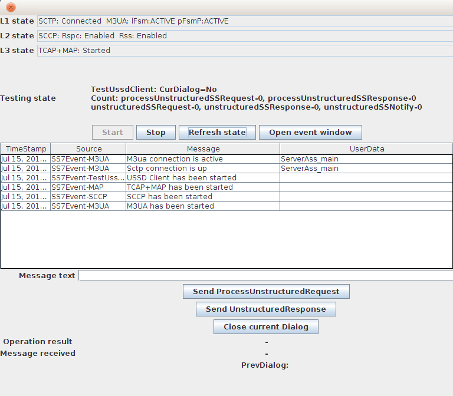
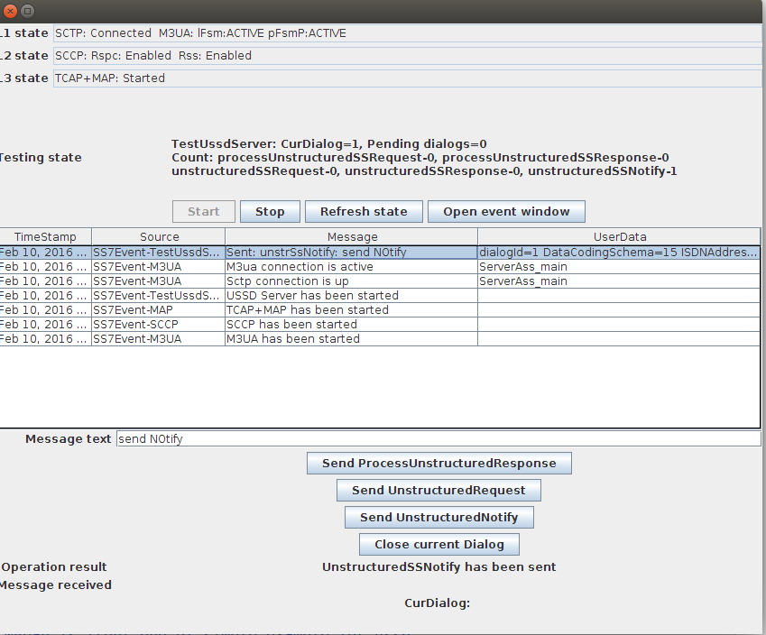

Document Conventions
This manual uses several conventions to highlight certain words and phrases and draw attention to specific pieces of information.
In PDF and paper editions, this manual uses typefaces drawn from the Liberation Fonts set. The Liberation Fonts set is also used in HTML editions if the set is installed on your system. If not, alternative but equivalent typefaces are displayed. Note: Red Hat Enterprise Linux 5 and later includes the Liberation Fonts set by default.
Typographic Conventions
Four typographic conventions are used to call attention to specific words and phrases. These conventions, and the circumstances they apply to, are as follows.
Mono-spaced Bold
Used to highlight system input, including shell commands, file names and paths. Also used to highlight key caps and key-combinations. For example:
To see the contents of the file my_next_bestselling_novel in your current working directory, enter the cat my_next_bestselling_novel command at the shell prompt and press Enter to execute the command.
The above includes a file name, a shell command and a key cap, all presented in Mono-spaced Bold and all distinguishable thanks to context.
Key-combinations can be distinguished from key caps by the hyphen connecting each part of a key-combination. For example:
Press Enter to execute the command.
Press to switch to the first virtual terminal. Press to return to your X-Windows session.
The first sentence highlights the particular key cap to press. The second highlights two sets of three key caps, each set pressed simultaneously.
If source code is discussed, class names, methods, functions, variable names and returned values mentioned within a paragraph will be presented as above, in Mono-spaced Bold.
For example:
File-related classes includefilesystemfor file systems,filefor files, anddirfor directories. Each class has its own associated set of permissions.
Proportional Bold
This denotes words or phrases encountered on a system, including application names; dialogue box text; labelled buttons; check-box and radio button labels; menu titles and sub-menu titles. For example:
Choose from the main menu bar to launch
Mouse Preferences. In the Buttons tab, click the Left-handed mouse check box and click Close to switch the primary mouse button from the left to the right (making the mouse suitable for use in the left hand).To insert a special character into a
geditfile, choose from the main menu bar. Next, choose from theCharacter Mapmenu bar, type the name of the character in the Search field and click Next. The character you sought will be highlighted in the Character Table. Double-click this highlighted character to place it in the Text to copy field and then click the Copy button. Now switch back to your document and choose from thegeditmenu bar.
The above text includes application names; system-wide menu names and items; application-specific menu names; and buttons and text found within a GUI interface, all presented in Proportional Bold and all distinguishable by context.
Note the menu:>[] shorthand used to indicate traversal through a menu and its sub-menus. This is to avoid the difficult-to-follow 'Select from the menu of the main menu bar' approach.
Mono-spaced Bold Italic or Proportional Bold Italic
Whether Mono-spaced Bold or Proportional Bold, the addition of Italics indicates replaceable or variable text. Italics denotes text you do not input literally or displayed text that changes depending on circumstance. For example:
To connect to a remote machine using ssh, type
ssh username@domain.nameat a shell prompt. If the remote machine is example.com and your username on that machine is john, typessh john@example.com.The
mount -o remount file-systemcommand remounts the named file system. For example, to remount the /home file system, the command ismount -o remount /home.To see the version of a currently installed package, use the
rpm -q packagecommand. It will return a result as follows:package-version-release.
Note the words in bold italics above —username, domain.name, file-system, package, version and release. Each word is a placeholder, either for text you enter when issuing a command or for text displayed by the system.
Aside from standard usage for presenting the title of a work, italics denotes the first use of a new and important term. For example:
When the Apache HTTP Server accepts requests, it dispatches child processes or threads to handle them. This group of child processes or threads is known as a server-pool. Under Apache HTTP Server 2.0, the responsibility for creating and maintaining these server-pools has been abstracted to a group of modules called Multi-Processing Modules (MPMs). Unlike other modules, only one module from the MPM group can be loaded by the Apache HTTP Server.
Pull-quote Conventions
Two, commonly multi-line, data types are set off visually from the surrounding text.
Output sent to a terminal is set in Mono-spaced Roman and presented thus:
books Desktop documentation drafts mss photos stuff svn books_tests Desktop1 downloads images notes scripts svgs
Source-code listings are also set in Mono-spaced Roman but are presented and highlighted as follows:
package org.jboss.book.jca.ex1;
import javax.naming.InitialContext;
public class ExClient
{
public static void main(String args[])
throws Exception
{
InitialContext iniCtx = new InitialContext();
Object ref = iniCtx.lookup("EchoBean");
EchoHome home = (EchoHome) ref;
Echo echo = home.create();
System.out.println("Created Echo");
System.out.println("Echo.echo('Hello') = " + echo.echo("Hello"));
}
}Notes and Warnings
Finally, we use three visual styles to draw attention to information that might otherwise be overlooked.
|
Note
A note is a tip or shortcut or alternative approach to the task at hand. Ignoring a note should have no negative consequences, but you might miss out on a trick that makes your life easier. |
|
Important
Important boxes detail things that are easily missed: configuration changes that only apply to the current session, or services that need restarting before an update will apply. Ignoring Important boxes won’t cause data loss but may cause irritation and frustration. |
|
Warning
A Warning should not be ignored. Ignoring warnings will most likely cause data loss. |
Provide feedback to the authors!
If you find a typographical error in this manual, or if you have thought of a way to make this manual better, we would love to hear from you! Please submit a report in the the {this-issue.tracker.ur}, against the product Restcomm USSD GATEWAY` `, or contact the authors.
When submitting a bug report, be sure to mention the manual’s identifier: Restcomm USSD GATEWAY
If you have a suggestion for improving the documentation, try to be as specific as possible when describing it. If you have found an error, please include the section number and some of the surrounding text so we can find it easily.
1. Introduction to Restcomm USSD GATEWAY
Restcomm USSD GATEWAY is an Open Source Java based USSD Gateway Platform that routes USSD messages from the signaling network to service applications and the other way around. It enables operators to offer real-time interactions to mobile subscribers and deliver interactive content to their mobile phones. Restcomm USSD GATEWAY strictly adheres to the standards and specifications defined by the International Telecommunications Union (ITU).
Restcomm USSD GATEWAY acts as an intermediary platform linking the service applications to the GSM network in a session oriented communication. The platform is easy-to-install and easy-to-deploy allowing you to have the Gateway set up and configured very quickly.
Restcomm USSD GATEWAY comes with an efficient Command Line Interface (CLI) tool allowing you to completely configure the Gateway at run-time and manage it using simple commands rather than do everything manually. Restcomm USSD GATEWAY also comes with a Graphical User Interface (GUI) that will allow you to configure, monitor and manage the Gateway through a convenient user-friendly interface.
The Open Source Software gives you the flexibility to understand the readily available source code and the freedom to customise the product to meet your Enterprise needs.
This guide provides details on configuring and using the platform and information regarding the supported protocols and compliant standards. For installation instructions, please refer to the Installation Guide published along with this.
2. Overview
2.1. USSD
USSD stands for Unstructured Supplementary Services Data which is a protocol used by GSM mobile phones much like the Short Message Service (SMS) but used to communicate with the service provider’s applications/services. USSD is used by the service provider to offer the subscriber with operator services like prepaid callback service, location-based content services, menu-based information services, mobile-money services and similar interactive services.
There is a difference between USSD and SMS handling.
Unlike SMS, which makes use of a store and forward method of message delivery, USSD messages establish a real-time connection during a USSD session.
In the case of SMS, Short Message is first delivered to the sender’s Short Message Service Center (SMSc) which then attempts to deliver the message to the intended recipient (s). So SMS does not guarantee that the message will be delivered instantly.
2.2. USSD Session
USSD establishes a real time session between the mobile handset and the application handling the service and the information from the mobile handset is sent directly to the service. The concept of a real time session is very useful for constructing an interactive menu driven application. Refer to the figure below depicting the working of a real time session.
A user dialing an USSD service number (short code) initiates a dialog with the USSD handling application deployed on the Restcomm Platform as shown in the above figure. The "Network Node" in the figure could be a MSC, HLR or VLR. The Restcomm Platform integrates with the "Network Node" using the MAP protocol.
2.3. USSD Service number
Short codes are special numbers (shorter than normal phone numbers) often associated with automated services and are unique to each operator.
A detailed description of the allowed MMIs (or short codes) which the user can dial is specified in 3GPP TS 22.090.
In the user’s home network the following number range is defined for USSD services:
1, 2 or 3 digits from the set (\* , #) followed by 1X(Y), where X=any number 0-4, Y=any number 0-9, then, optionally "\* " followed by any number of any characters, and concluding with # SEND
For example a user may dial *122 to reach a specific USSD service which is deployed in the home network. The application in its order may reply with a menu based on the dialed short code. One of the biggest benefits is that this service is always available even when the user is roaming.
2.4. MAP Message Flow
The diagram below depicts a typical MAP message flow for data transfer between the "Network Node" and the Restcomm platform to implement a menu driven application. If you would like to read more about mobile-intiated (and network-initated) USSD operations and the use of MAP USSD services, please refer to [3GPPTS 24.090] in the references section.
Mobile initiated USSD service begins when the user dials a USSD string (*122 in this example). The message flow involves the following steps:
-
The Network sends a 'TCAP Begin' message with the Component 'MAP_PROCESS_UNSTRUCTURED_SS_REQUEST' to the Restcomm platform. The Restcomm platform invokes USSD application logic.
-
The Application requests additional information from the user (action one or action two) via 'MAP_UNSTRUCTURED_SS_REQUEST' encapsulated in a 'TCAP Continue' message. The 'TCAP Dialogue' starts now.
-
The Application receives the user’s selection of the action.
-
Based on the user’s menu selection, the application performs the predefined logic associated with the selection and sends a response back to the user. This time the application does not require additional information from the user and it sends a response using the component 'MAP_PROCESS_UNSTRUCTURED_SS_REQUEST' and terminates the 'TCAP dialogue'.
2.5. USSD Gateway
Existing MSC, VLR, and HLR network elements are proprietary and run on non-standard operating environments located in trusted operator’s zones that make it difficult to build and deploy new applications. Also, these network elements do not provide the tools and interfaces needed to access and retrieve data from content providers over the Internet. The USSD Gateway connects to the MSC, VLR, or HLR and enables the flow of USSD messages to be extended to an open, standards-based application server located in the IP network. The AS also provides the tools and interfaces to enable access to the content providers through the Internet.
2.6. Restcomm USSD GATEWAY
2.6.1. Major Features
Restcomm 's implementation of USSD Gateway is the first and only open source USSD Gateway with a host of rich features and advantages.
- Java-based
-
Restcomm USSD GATEWAY is the only Java based USSD Gateway. It is robust and reliable and can be installed on any Operating System that supports Java (JDK 7 and SCTP).
- Open Source
-
The Software is open-source, giving you the freedom to understand the code and customise it to your enterprise needs. It is supported by a vibrant Open source community.
- Carrier Grade Performance
-
Restcomm USSD GATEWAY has been deployed at telecom operators around the world and is processing billions of USSD transactions each day. A single Mobicents USSD node can process 1000’s of USSD/sec and can be adapted to the needs of telecom service providers of different sizes in any country reducing your CAPEX and OPEX costs.
- Load Balancing and Transparent Failover
-
Multiple Restcomm USSD GATEWAY nodes can be arranged in a cluster across one or more geographically distributed data centers to scale up throughput and provide various levels of redundancy, high availability and fault tolerance.
- Cloud Ready
-
Restcomm USSD GATEWAY is Cloud-ready. It can be deployed on dedicated hardware, private cloud infrastructure or public IaaS such as AWS.
- Network Push
-
Restcomm USSD GATEWAY supports network/application/service initiated USSD request. The request can be just Notification or menu based interaction (dialog).
- Multilingual
-
Restcomm USSD GATEWAY supports UCS2 encoding in addition to GSM 7 Bit. Application can send/receive the request/response in UCS2 format and process at runtime.
- SS7 Hardware Cards
-
Restcomm USSD GATEWAY can be used with Intel family boards (Dialogic SS7 cards) or Zaptel/Dahdi compatible TDM devices (Digium, Sangoma). For production its recommended to use Dialogic boards only.
- SIGTRAN (M3UA)
-
It also has in-built support for SIGTRAN (M3UA using SCTP).
- HTTP interface
-
HTTP interface is a commont interface that can be used for connection with service applications.
- SIP interface
-
SIP interface is another interface that can be used for connection with service applications (following 24.390 specification: "Unstructured Supplementary Service Data (USSD) using IP Multimedia (IM) Core Network (CN) subsystem IMS"). This interface is used for interconnecting with Restcomm.
- Easy Configuration and Management
-
Restcomm USSD GATEWAY comes with an efficient Command Line Interface (CLI) tool allowing you to completely configure the Gateway at run-time and manage it using simple commands rather than do everything manually. Restcomm USSD GATEWAY also comes with a Graphical User Interface that will allow you to configure, monitor and manage the Gateway through a convenient user-friendly interface.
-
Restcomm USSD GATEWAY is easily scalable with a configurable load-balancing and high available architecture.
-
Restcomm USSD GATEWAY generates the CDR for every transaction, including the response of users to the menu provided.
-
- Multi Tenancy
-
Same instance of USSD Gateway can be connected to multiple different network each with its own origination or/and remote point codes and global titles.
- CDR
-
Generates CDR in database or plain text file as CSV.
- Audit
-
Provides mechanism to record every action of user configuring USSD for latter audit.
- Logging
-
Provides very powerful logging which can be configured at runtime to log only ERROR’s/WARNING for Production or DEBUG when trying to identify problems.
- Statistics
-
Provides in details statistics of number of requests/response per second, number of Dialog created successfully or failed. If failed reason for failure etc.
2.6.2. Technical Specifications
Restcomm USSD GATEWAY is not restricted by Transaction Per Second model. The only restricting factor is memory + CPU capacity of the host servers, third-party applications or the underlying database service.
-
Restcomm USSD GATEWAY supports as many as 1073741823 incoming and 1073741823 outgoing concurrent sessions/dialogs.
-
Restcomm USSD GATEWAY supports unlimited E1 links and the only limiting factor is the underlying TDM board used.
-
Restcomm USSD GATEWAY SCTP supports as many associations as supported by the underlying Operating System. Can be setup in multihome.
-
Restcomm USSD GATEWAY M3UA can be confgured to have as many ASP’s / IPSP’s as needed by the system.
-
Restcomm USSD GATEWAY SCCP can be confgured to have virtually unlimited Global Title Translation rules and also supports wild characters for partial matching of Global Title digits.
2.6.3. HTTP Transfer Mechanism
The Restcomm USSD Gateway makes use of HTTP protocol between the gateway and the third-party applications (or Value Added Service Modules). Restcomm USSD Gateway receives the USSD request from the subscriber’s handset/device via the GSM Signaling network and then translates these requests to HTTP depending on the rules configured in the Gateway to route to a corresponding Value Added Service (VAS) or third-party application. The HTTP callback mechanism allows the third-party Application to be agnostic to Operating System, Programming Language and Framework. The third-party Application can be either of the following technologies on any Operating System:
-
Apache Tomcat, JBoss AS, Oracle Application Server, IBM Websphere etc for JSP/Servlet on Java
-
PHP
-
Microsoft IIS for ASP
2.6.4. SIP Transfer Mechanism
The Restcomm USSD Gateway makes use of SIP protocol between the gateway and the third-party applications (or Value Added Service Modules). 24.390 specification "Unstructured Supplementary Service Data (USSD) using IP Multimedia (IM) Core Network (CN) subsystem IMS" is implemented. SIP interface can be used for interconnection with Mobicents Restcomm application.
Restcomm USSD Gateway receives the USSD request from the subscriber’s handset/device via the GSM Signaling network and then translates these requests to SIP depending on the rules configured in the Gateway to route to a corresponding SIP Phone or third-party application.
3. Architecture
Restcomm USSD GATEWAY is based on robust and proven Restcomm JAIN SLEE 1.1 Server and Restcomm jSS7 Stack.
Restcomm JAIN SLEE Server is a highly scalable event-driven application server with a robust component model and fault tolerant execution environment. It provides a set of connectors to a variety of networks elements: SS7 MAP, TCAP, INAP, ISUP, SMPP, XMPP, SIP, MGCP, HTTP, XDM, XCAP, Diameter and many others. It is fully compliant with JSR 240 (JSLEE 1.1).
Restcomm jSS7 is a software based implementation of the SS7 protocol. It provides implementation for Level 2 and above in the SS7 protocol Stack. Restcomm jSS7 Stack User Guide is bundled within and you can refer to the guide for more details on the Stack.
The diagram below depicts top design overview:
Restcomm USSD GATEWAY provides Load Balancing and Fault Tolerance. Two or more third-party Application Servers can be paired to provide Fault-Tolerance on the Gateway and GSM Network level.
Geographic Redundancy can be achieved as shown in the diagram below:
Below diagram shows how to achieve load-balancing by connecting to two STP’s from Operator side.
|
As of now, the Gateway supports the following protocols for proxying:
|
4. Multi-tenancy support
Restcomm USSD GATEWAY is able to work in multi-tenant mode by connecting to a set of different SS7 operators. The procedure is based on dividing of USSD routing rules into several areas ("subnetworks").
Each area has its unique digital "netwokId" value. You can assign a unique USSD Global Title for each netwokId. Each SS7 SCCP service access point (SAP) and each USSD Routing Rule belongs to one of the networks (to each of them a networkId value is assigned). Default netwokId value is "0". If a user does not specify a netwokId value when USSD Routing Rule or SAP rule creation, networkId=0 will be assigned.
When a PULL request comes from SS7 network, a networkId value from SAP will be assigned to a USSD dialog. Then USSD Routing Rule with assigned networkId will be chosen for request routing to a proper HTTP or SIP application.
When a PUSH request comes from HTTP application, a networkId value from HTTP XML payload ("networkId" attribute) is taken (or is assigned as 0 if "networkId" attribute is missed in the XML payload). Then SS7 SAP will be chosen when routing USSD request to SS7 network.
When a PUSH request comes from SIP application, a networkId value is always assigned as 0. It is impossible now to use SIP App originated messages for multi-tenancy.
NetworkId are specified at different places:
-
for JSS7 level SAPs and SCCP routing rules are configured for this. See "7.4.5. Create a new Service Access Point" and "7.4.17. Create a new SCCP Rule" chapters of "JSS7 stack User Guide".
-
for USSD Routing Rule see the chapter Create new USSD Rule.
For configuring of USSD Global Titles - see chapters USSD Global Title.
5. Running
5.1. Running the Gateway
-
Pre-requisite:
-
You must have Restcomm USSD GATEWAY installed as explained in the Installation Guide.
-
If you are using the SS7 board on server, you must ensure that the
java.library.pathvariable is set to point to the directory containing the native component. Alternatively you can copy it to the JBoss native library path manually.
-
-
All you have to do to start the Gateway is start the JBoss Application Server. To start the JBoss Server you must execute the run.sh (Unix) or run.bat (Microsoft Windows) startup script in the installation directory mobicents-ussdgateway-/jboss-5.1.0.GA/bin. Note that this will start the server in the default profile. The "default" profile is a clean profile where you start from scratch and configure the entire SS7 Stack and USSD Gateway to suit your requirements.
-
Result: If the service started properly you should see the following last few output lines in the Unix terminal or Command Prompt depending on your environment:
22:23:11,583 INFO [DeploymentMBeanImpl] (main) Installed DeployableUnitID[url=file:/home/vinu/mobicents-ussdgateway-<version>/jboss-5.1.0.GA/server/default/deploy/mobicents-ussd-gateway/services-DU-6.1.5.GA.jar/] 22:23:11,874 INFO [ServiceManagementImpl] (main) Activated ServiceID[name=mobicents-ussdgateway-cdr,vendor=org.mobicents,version=1.0] 22:23:11,976 ERROR [STDERR] (pool-28-thread-1) QUERRY: 000000 CREATE TABLE USSD_GW_CDRS (ID VARCHAR(150) NOT NULL, L_SPC INT, L_SSN SMALLINT, L_RI SMALLINT, L_GT_I SMALLINT, L_GT_DIGITS VARCHAR(18), R_SPC INT, R_SSN SMALLINT, R_RI SMALLINT, R_GT_I SMALLINT, R_GT_DIGITS VARCHAR(18), SERVICE_CODE VARCHAR(10), OR_NATURE SMALLINT, OR_PLAN SMALLINT, OR_DIGITS VARCHAR(18), DE_NATURE SMALLINT, DE_PLAN SMALLINT, DE_DIGITS VARCHAR(18), ISDN_NATURE SMALLINT, ISDN_PLAN SMALLINT, ISDN_DIGITS VARCHAR(18), VLR_NATURE SMALLINT, VLR_PLAN SMALLINT, VLR_DIGITS VARCHAR(18), IMSI VARCHAR(100), TERMINATE_REASON VARCHAR(60), TSTAMP TIMESTAMP NOT NULL , DIALOG_ID BIGINT, PRIMARY KEY(ID,TSTAMP)); 22:23:12,135 INFO [ServiceManagementImpl] (main) Activated ServiceID[name=mobicents-ussdgateway,vendor=org.mobicents,version=1.0] 22:23:12,395 INFO [UssdPropertiesManagement] (main) Loading USSD Properties from /home/vinu/mobicents-ussdgateway-6.1.5.GA/jboss-5.1.0.GA/server/default/data/UssdManagement_ussdproperties.xml 22:23:12,395 WARN [UssdPropertiesManagement] (main) Failed to load the USSD configuration file. /home/vinu/mobicents-ussdgateway-6.1.5.GA/jboss-5.1.0.GA/server/default/data/UssdManagement_ussdproperties.xml (No such file or directory) 22:23:12,396 INFO [ShortCodeRoutingRuleManagement] (main) Loading short code routig rule configuration from /home/vinu/mobicents-ussdgateway-6.1.5.GA/jboss-5.1.0.GA/server/default/data/UssdManagement_scroutingrule.xml 22:23:12,397 WARN [ShortCodeRoutingRuleManagement] (main) Failed to load the short code routig rule configuration file. /home/vinu/mobicents-ussdgateway-6.1.5.GA/jboss-5.1.0.GA/server/default/data/UssdManagement_scroutingrule.xml (No such file or directory) 22:23:12,400 INFO [UssdManagement] (main) Started UssdManagement 22:23:12,419 INFO [ShellServer] (main) Starting SS7 management shell environment 22:23:12,430 INFO [ShellServer] (main) ShellExecutor listening at /127.0.0.1:3435 22:23:12,498 INFO [Http11Protocol] (main) Starting Coyote HTTP/1.1 on http-127.0.0.1-8080 22:23:12,529 INFO [AjpProtocol] (main) Starting Coyote AJP/1.3 on ajp-127.0.0.1-8009 22:23:12,541 INFO [ServerImpl] (main) JBoss (Microcontainer) [5.1.0.GA (build: SVNTag=JBoss_5_1_0_GA date=200905221634)] Started in 1m:11s:118ms
-
If you are starting {this-application.dirname}-{project.version} for the first time, SS7 is not configured. You can use either the Shell Client or the GUI to connect to {this-application.dirname}-{project.version} and configure the SS7 Stack, USSD parameters and Routing Rules. Once configured, the state and configuration of SS7 and USSD are both persisted which stands a server re-start operation. The next chapter will discuss in detail about configuring SS7 and the USSD Gateway.
-
To stop the Restcomm USSD GATEWAY , you must shut down the JBoss Application Server. To shut down the server(s) you must execute the
shutdown.sh -s(Unix) orshutdown.bat -s(Microsoft Windows) script in the installation directory mobicents-ussdgateway-/jboss-5.1.0.GA/bin. -
If the server stopped properly, you will see the following three lines as the last output in the Unix terminal or Command Prompt:
[Server] Shutdown complete Halting VM
5.2. Running the Gateway - Simulator Profile
The Restcomm USSD GATEWAY offers you an option to run the Gateway with a "simulator" profile for testing purpose. The "simulator" profile is a pre-configured profile to work with the jss7-simulator. Starting the Gateway with the "simulator" profile is similar to the steps explained for the "default" profile except that you must pass the string value "simulator" to the -c command line option when invoking the run script.
[bin]$ ./run.sh -c simulator
By default, the USSD Simulator profile is configured for use in Linux systems. For using it in Microsoft Windows systems, you must configure the parameters as explained below.
Open the file mobicents-ussdgateway-<version>/jboss-5.1.0.GA/server/simulator/data/SCTPManagement_sctp.xml and replace in two places, the parameter ipChannelType="0" with ipChannelType="1" to enable TCP connection instead of SCTP since Windows does not support SCTP.
If you are using in a Linux system, there is no modification required to the settings.
5.2.1. Running USSD Examples in Simulator
If you are not familiar with the Mobicents jss7 Simulator, you can find instructions about using the jss7-simulator in the Restcomm jSS7 User Guide. You will also find example test cases explained in detail in the jSS7 User Guide. In this section you will find a sample USSD Pull and USSD Push examples explained using the jSS7 Simulator.
-
Change the working directory to the bin folder in the Simulator’s installation directory.
[vinu@vinu-neha ~]$ cd Mobicents-ussd-<version>/tools/Mobicents-ss7-simulator/bin
-
Ensure that the run.sh start script is executable.
bin$ chmod +x run.sh
-
Execute the run.sh Bourne shell script with the command
./run.sh gui.bin$ ./run.sh gui
This will launch the Simulator GUI Application.
-
When the GUI shows up, select "main" (default) as host name [or type "win" as host name under Windows] and press the 'Start' button. The Simulator is already pre-configured to connect to the USSD Gateway (running in simulator profile). Press 'Run test' and again click on 'Start' in the next screen. The Simulator will connect to USSD (via m3ua protocol). The Low level part is configured to SCTP (not TCP) protocol and hence you can test the USSD in a Linux environment. To test under Windows OS, you must change the SS7 simulator settings to TCP.
-
After approximately 30 seconds you will see the state of the Simulator change to "M3UA connection is active" as in figure below:
Figure 1. USSD SS7 Simulator - Active -
Restcomm USSD GATEWAY is configured with a routing rule for *519#. Dial *519# in your Simulator GUI and press 'Send ProcessUnstructuredRequest'. The example will respond to you with the message "Hello World 1. Balance 2. Texts Remaining".
 Figure 2. USSD SS7 Simulator - Process Unstructured Request
Figure 2. USSD SS7 Simulator - Process Unstructured Request -
Now Dial 1 in your Simulator GUI and press 'Send UnstructuredResponse'. You should get a response "Thank you!".
 Figure 3. USSD SS7 Simulator - Unstructured Request
Figure 3. USSD SS7 Simulator - Unstructured Request
-
You must first start the Restcomm USSD GATEWAY in simulator profile.
[vinu@vinu-neha ~]$ cd mobicents-ussdgateway-<version>/jboss-5.1.0.GA/bin [vinu@vinu-neha bin]$./run.sh -b 127.0.0.1 -c simulator
-
To send a PUSH request go to http://localhost:8080/jmx-console/ and click the link
org.mobicents.ussdgateway.examplein the left menu. Then open the MBean'name=HttpPush'. -
MBean provides two operations: 1)
sendNotifyto push Notification and 2)sendRequestto push USSD menu based tree. The parameterIsdnis the MSISDN to which Notify or Request is to be sent.Figure 4. Mobicents USSD Simulator - NotifyYou can simulate a simple Notify dialog by following the below steps:
-
Fill the ISDN field with a preferred ISDN number, for example "1111" is good for SS7 Simulator. Now press "Apply changes".
-
Perform "reset" operation. Perform "sendNotify" operation with parameters: String=<Text of your notification>, boolean=false, int=60000 and String=<any random string>. Parameters definition is as below
-
1st String is USSD message that you want to push to mobile
-
2nd Boolean if set to true means USSD Gw will send empty TCAP Begin and try to establish dialog before sending actual message.
-
3rd Int is custom invoke timeout. User must respond within this period else USSD Gw will terminate Dialog and Application will get appropriate error message
-
4th String is random string that is stored at USSD Gw side as custom object.
-
When ever response comes back, USSD Gw will include this custom string in XML Payload.
-
Perform "close" operation. You will now find a notification at the SS7 Simulator.
You can also simulate more complicated scenarios like pushing the tree based menu to user and expecting some input from users by calling
sendRequest. The below Class provides more explanation for attributes and operations of HttpPush.
-
/**
* Simple MBean interface. This MBean is front end of simple example for ussd
* push via HTTP.
*
*/
public interface HTTPPushMBean {
/**
* The URI where HTTP Post request is to be submitted. This should point the
* USSD Gateway. Basically http://USSD-IP:8080/mobicents
*
* @param uri
*/
public void setTargetUri(String uri);
/**
* Get the URI pointing to USSD Gateway for push
*
* @return
*/
public String getTargetUri();
/**
* Set the MSISDN where USSD Push is to be sent
*
* @param isdn
*/
public void setIsdn(String isdn);
/**
* Get the MSISDN where USSD request is to be pushed
*
* @return
*/
public String getIsdn();
/**
* Reset( remove local dialog ) in case something goes wrong
*/
public void reset();
/**
* Starts dialog if not already started. Sends Unstructured Request. It can
* be sent multiple times in the same dialog
*
* @param ussdRequest
* The actual USSD String request
* @param emptyDialogHandshake
* If true, USSD Gateway will first establish Dialog by doing
* handshake before sending USSD request. If false the USSD
* request will be added in Dialog begin message
* @param invokeTimeout
* Time in milliseconds USSD gateway will wait for user to
* respond, if user doesn't respond back within specified time,
* USSD Gateway will abort the dialog and send back Abort error
* to HTTP App
* @param userData
* User Data to be sent with every request to USSD Gateway which will be
* returned back with response from USSD Gw. This is just in case if
* application wants to keep some data at Dialog level, for example MSISDN
*
*
* @throws Exception
*/
public void sendRequest(String ussdRequest, boolean emptyDialogHandshake, int invokeTimeout, String userData) throws Exception;
/**
* Starts dialog if not already started. Sends Notify Request. It can be
* sent multiple times in the same dialog
*
* @param ussdRequest
* The actual USSD String request
* @param emptyDialogHandshake
* If true, USSD Gateway will first establish Dialog by doing
* handshake before sending USSD request. If false the USSD
* request will be added in Dialog begin message
* @param invokeTimeout
* Time in milliseconds USSD gateway will wait for user to
* respond, if user doesn't respond back within specified time,
* USSD Gateway will abort the dialog and send back Abort error
* to HTTP App
* @param userData
* User Data to be sent with every request to USSD Gateway which will be
* returned back with response from USSD Gw. This is just in case if
* application wants to keep some data at Dialog level, for example MSISDN
* @throws Exception
*/
public void sendNotify(String ussdRequest, boolean emptyDialogHandshake, int invokeTimeout, String userData) throws Exception;
/**
* USER Abort the underlying MAP Dialog
*
* @throws Exception
*/
public void abort() throws Exception;
/**
* Close the underlying MAP Dialog. This will send TCAP End to peer
*
* @throws Exeption
*/
public void close() throws Exception;
/**
* Return current status of service - what has been sent, what has been
* received etc.
*
* @return
*/
public String getStatus();
}5.3. Running the Shell
You must start the Shell client and connect to the managed instance prior to executing commands to configure the Gateway. Shell can be started by issuing the following command from mobicents-ussdgateway-/jboss-5.1.0.GA/bin directory:
[$] ./ss7-cli.shOnce console starts, it will print following information and await further commands:
version=2.0.0-SNAPSHOT,name=mobicents CLI,prefix=mobicents,vendor=TeleStax mobicents>
Before issuing further commands you must connect to a managed instance. For more details on connecting to an instance and for a list of all supported commands and details on configuring the SS7 stack refer to the Mobicents SS7 Stack User Guide.
5.4. Running the Graphical User Interface
Open a Web Browser and navigate to http://localhost:8080/mobicents-management/. This will launch the Restcomm GUI Management Console which is horizontally segregated into multiple tabs, one tab for each product in the Restcomm Suite. You will notice that only the tabs of products whose binaries are installed already will be shown enabled and active in the GUI. If you have successfully installed the Restcomm USSD GATEWAY you will find the tabs for JAIN-SLEE, JMX, SS7 and USSD GW active and enabled. For more details on using the GUI for SS7 or JAIN-SLEE please refer to their respective user guides. This document only provides instructions for using the GUI to configure the USSD Gateway.
Switch to the USSD GW tab and you will find that the window will look similar to the figure below. The GUI is divided into three sections:
-
A left panel listing the management and monitoring units (Server Settings, Routing Rules, Metrics). You can click on any of these to select and navigate to the specific management unit.
-
A main panel displaying the currently selected management unit. The main view is categorized into multiple tabs to manage different aspects of the selected layer.
-
A bottom panel displaying the log data. You can clear the log anytime by clicking on the trash icon at the top right corner of this panel. You can also minimize or maximize this panel to suit your needs.

5.4.1. Connect to a new Instance
You can connect to a new instance by entering the IP:Port values and the login credentials in the top left corner of the GUI. However please note that this feature is not available in this release but will be fully functional in the next release.
5.4.2. Authentication
Restcomm USSD GATEWAY GUI Management Security is based on the JBoss Security Framework. However please note that the feature is not fully functional yet and you will not be able to sign-out or sign-in using the login panel at the top right corner of the GUI. Future releases will offer a full implementation.
As of now, there is basic authentication offered (which is based on the JBoss Security framework). When you try to start the Web Console, you will be prompted to enter login credentials. These credentials can be configured in the files jmx-console-roles.properties and jmx-console-users.properties located at mobicents-ussdgateway-<version>/jboss-5.1.0.GA/server/<profile>/conf/props/.
You can also change the authentication from flat file system to database by making necessary configurations in the file mobicents-ussdgateway-<version>/jboss-5.1.0.GA/server/<profile>/conf/login-config.xml.
For detailed instructions and to know more about JBoss Security Framework please refer to the JBoss Installation Guide here.
| Deafult user-id and password for GUI Management Console is admin and admin. You can change the user-id and password in files jmx-console-roles.properties and jmx-console-users.properties located at mobicents-ussdgateway-<version>/jboss-5.1.0.GA/server/<profile>/conf/props/ |
6. Configuring
You must fine-tune Memory and Database settings for better performance before using Restcomm USSD GATEWAY in production. Once you complete setting up the Gateway you must configure the SS7 Stack, USSD routing rules and USSD paramters. Restcomm USSD GATEWAY comes with a convenient user-friendly Graphical User Interface (GUI) and a Command Line Interface (CLI) that will allow you to configure, monitor and manage the Gateway. While the CLI tool allows complete configuration and control of the Gateway, the GUI-based management enhances the usability of the Gateway and gives you the ability to configure and manage the USSD Gateway dynamically. This chapter will explain how to manage the Gateway effectively using both the GUI and the CLI.
6.1. Memory Settings
You should fine tune the JVM memory settings based on your needs but we recommend you allocate a minimum of 3 GB for initial and maximum heap size. These settings are specified in the file[path]mobicents-ussdgateway-/jboss-5.1.0.GA/bin/run.conf.
- -Xms3072m
-
Initial heap size, set in megabytes
- -Xmx3072m
-
Maximum heap size, set in megabytes
6.2. CDR Logging Settings
Every transaction in the Restcomm USSD GATEWAY is logged either in a Textfile or a Database as per the configuration. By default, transactions are logged in a plain text file. Alternatively, you can choose to have CDR logged in a Database instead of a plain text file. You will find instructions for both in the sections below.
If you change the configuration to log CDR in a Database, then you must be aware that transactions are logged into the default Database HSQLDB that comes bundled with JBoss AS and leverages the JBoss AS DataSource. However this is only made available to allow the platform to run "out of the box". You must configure a production ready Database prior to using the Gateway in a production environment. Restcomm USSD GATEWAY has been tested with PostgreSQL and MySQL.
To switch between Database and plain text file, you can make use of the CLI command ussd set cdrloggingto <Database|Textfile> or configure this in the GUI.
Refer to CDR logging - Database / Textfile for more details.
| HSQLDB must not be used in a production environment. You must ensure that you delete this datasource and configure a production-friendly Database like PostgreSQL or MySQL. |
6.2.1. Configuring an Alternate DataSource
The example HSQLDB DataSource is bound to the JNDI name java:/DefaultDS and its descriptor is available in the file mobicents-ussdgateway-/jboss-5.1.0.GA/server/<profile>/deploy/hsqldb-ds.xml. You must delete this datasource and configure the Platform to use your choice of Database. For instructions on configuring an alternate DataSource with an example, please refer to Configuring MySQL as datasource. For detailed instructions and explanation please refer to the JBoss AS Getting Started Guide available here. You will also find a lot of examples in the folder mobicents-ussdgateway-/jboss-5.1.0.GA/docs/examples/jca/.
6.2.2. Configuring JSLEE JDBC RA
Restcomm USSD GATEWAY leverages JSLEE JDBC RA for persistence. Detailed JSLEE JDBC RA documentation is available in mobicents-ussdgateway-/docs/slee/Mobicents_SLEE_RA_JDBC_User_Guide.pdf that explains how to point to the new DataSource. An example configuration is explained in this admin guide in the section Configuring MySQL as datasource. When you have completed configuring an alternate DataSource in JBoss AS, you can proceed to modify JSLEE configurations accordingly. You must change the Dialect in the file mobicents-ussdgateway-/jboss-5.1.0.GA/server/<profile>/deploy/mobicents-slee/META-INF/jboss-beans.xml to reflect your alternate DataSource.
6.2.3. CDR Table Structure
CREATE TABLE USSD_GW_CDRS (ID VARCHAR(150) NOT NULL, L_SPC INT, L_SSN SMALLINT, L_RI SMALLINT, L_GT_I SMALLINT, L_GT_DIGITS VARCHAR(18), R_SPC INT, R_SSN SMALLINT, R_RI SMALLINT, R_GT_I SMALLINT, R_GT_DIGITS VARCHAR(18), SERVICE_CODE VARCHAR(50), OR_NATURE SMALLINT, OR_PLAN SMALLINT, OR_DIGITS VARCHAR(18), DE_NATURE SMALLINT, DE_PLAN SMALLINT, DE_DIGITS VARCHAR(18), ISDN_NATURE SMALLINT, ISDN_PLAN SMALLINT, ISDN_DIGITS VARCHAR(18), VLR_NATURE SMALLINT, VLR_PLAN SMALLINT, VLR_DIGITS VARCHAR(18), IMSI VARCHAR(100), STATUS VARCHAR(30) NOT NULL , TYPE VARCHAR(30) NOT NULL , TSTAMP TIMESTAMP NOT NULL , LOCAL_DIALOG_ID BIGINT, REMOTE_DIALOG_ID BIGINT, PRIMARY KEY(ID,TSTAMP)); where ID : Primary unique key L_SPC : Local Signaling Pointcode L_SSN : Local Subsystem Number L_RI : Local Routing Indicator L_GT_I : Local Global Title Indicator whose values are NO_GLOBAL_TITLE_INCLUDED(0) GLOBAL_TITLE_INCLUDES_NATURE_OF_ADDRESS_INDICATOR_ONLY(1) GLOBAL_TITLE_INCLUDES_TRANSLATION_TYPE_ONLY(2) GLOBAL_TITLE_INCLUDES_TRANSLATION_TYPE_NUMBERING_PLAN_AND_ENCODING_SCHEME(3) GLOBAL_TITLE_INCLUDES_TRANSLATION_TYPE_NUMBERING_PLAN_ENCODING_ SCHEME_AND_NATURE_OF_ADDRESS(4) L_GT_DIGITS : Local Global Title Digits R_SPC : Remote Signaling Pointcode R_SSN : Remote Subsystem Number R_RI : Remote Routing Indicator R_GT_I : Remote Global Title Indicator R_GT_DIGITS : Remote Global Title Digits SERVICE_CODE : The short code dialed by user, for example *519# OR_NATURE : AddressNature of origination If the MAP Dialog carries Originating Address Reference this is captured in this column Possible values are: unknown(0), international_number(1), national_significant_number(2), network_specific_number(3), subscriber_number(4), reserved( 5), abbreviated_number(6) and reserved_for_extension(7) OR_PLAN : Numbering Plan of origination. Possible values are: unknown(0), ISDN(1), spare_2(2), data(3), telex(4), spare_5(5), land_mobile(6), spare_7(7), national(8), private_plan(9), reserved(15); OR_DIGITS : Digits of origination DE_NATURE : AddressNature of Destination DE_PLAN : Numbering Plan of Destination DE_DIGITS : Digits of destination ISDN_NATURE : AddressNature The incoming MAP Dialog carries ISDN Address of mobile that dialed this shortcode. The column ISDN_NATURE captures ISDN details. ISDN_PLAN : Numbering Plan as explained above ISDN_DIGITS : Digits of MSISDN VLR_NATURE : AddressNature If MAP version is Ericsson MAP (E-MAP), it carries VLR address and IMSI VLR_PLAN : Numbering Plan as explained above VLR_DIGITS : Digits of VLR IMSI : IMSI STATUS : Final status of Dialog. Possible values are explained below: TYPE : If the USSD request is pull, its value is PULL or its PUSH TSTAMP : Time stamp when this request was executed LOCAL_DIALOG_ID : Local Transaction Id of TCAP Dialog REMOTE_DIALOG_ID : Remote Transaction Id of TCAP Dialog
Status : Final status of Dialog can be
- SUCCESS
-
Dialog ended successfully
- FAILED_INVOKE_TIMEOUT
-
Invoke (TCAP) sent from USSD Gateway to peer timed out.
- FAILED_DIALOG_TIMEOUT
-
Dialog (TCAP) timed out as there is no activity on Dialog. The default dialog timeout is 60 seconds which can be configured on TCAP stack.
- FAILED_APP_TIMEOUT
-
Request sent by USSD Gateway to Application timed out. Application took longer than configured
dialogtimeout. - FAILED_CORRUPTED_MESSAGE
-
Message received by USSD Gateway from HTTP/SIP Application is corrupted. Usually this will also create some ERROR traces in server.log
- FAILED_TRANSPORT_ERROR
-
Used only for SIP transport for now. Indicates transportation error
- FAILED_TRANSPORT_FAILURE
-
In case of USSD PULL if Application sennds back non OK (200) response
- FAILED_PROVIDER_ABORT
-
Dialog (TCAP) was aborted by peer
- FAILED_DIALOG_USER_ABORT
-
Dialog (TCAP) was aborted by user
- FAILED_DIALOG_REJECTED
-
Dialog (TCAP) was rejected by user
- FAILED_SYSTEM_FAILURE
-
Error happened while parsing the received USSD/SS7 messsage from SS7 peer. Usually this will also create some ERROR traces in server.log
- FAILED_ABSENT_SUBSCRIBER
-
Subscriber is absent (sent by HLR). Only for USSD PUSH and after MAP SRI is successful
- FAILED_ILLEGAL_SUBSCRIBER
-
Subscriber is illegal (sent by HLR). Only for USSD PUSH when MAP SRI is sent
- FAILED_USSD_BUSY
-
Subscriber is busy (sent by HLR). Only for USSD PUSH when MAP SRI is sent
- FAILED_MAP_ERROR_COMPONENT
-
Some error sent by HLR.
- FAILED_MAP_REJECT_COMPONENT
-
Component (Invoke) rejected by HLR.
- ABORT_APP
-
Application requested to Abort the Dialog (TCAP)
- SRI_DIALOG_REJECTED
-
Dialog (TCAP) was rejected by HLR specifcally when MAP SRI request was sent
- SRI_PROVIDER_ABORT
-
Dialog (TCAP) was aborted by peer specifcally when MAP SRI request was sent
- SRI_DIALOG_USER_ABORT
-
Dialog (TCAP) was aborted by user specifcally when MAP SRI request was sent
- SRI_DIALOG_TIMEOUT
-
Dialog (TCAP) was timedout specifcally MAP SRI Dialog
- SRI_MAP_REJECT_COMPONENT
-
Component (Invoke) rejected by HLR specifcally for MAP SRI request
- SRI_ABSENT_SUBSCRIBER
-
Subscriber is absent (sent by HLR) specifcally for MAP SRI request
- SRI_CALL_BARRED
-
Call is bared (sent by HLR) specifcally for MAP SRI request
- SRI_TELESERVICE_NOT_PROVISIONED
-
Teleservice no provisioned (sent by HLR) specifcally for MAP SRI request
- SRI_UNKNOWN_SUBSCRIBER
-
Unknown subscriber (sent by HLR) specifcally for MAP SRI request
- SRI_MAP_ERROR_COMPONENT
-
Some error (sent by HLR) specifcally for MAP SRI request
6.3. Configuring JSLEE http-client RA
Restcomm USSD GATEWAY acts as a HTTP Client to achieve USSD pull by sending a HTTP POST request to third party applications (HTTP Server) for every dialled short code. You must configure the HTTP Client JSLEE Resource Adaptor’s properties to suit your requirements. Please refer to the SLEE RA HTTP Client User Guide available in mobicents-ussdgateway-/docs/slee/Mobicents_SLEE_RA_HTTP_Client_User_Guide.pdf.
For every Short Code Routing rule added in the USSD Gateway, you must ensure that there is a corresponding MAX_CONNECTIONS_FOR_ROUTES property appropriately configured in the HTTP Client JSLEE RA.
HTTP Client JSLEE RA’s default configuration allows the http-client to handle only two concurrent connections at a time.
You must modify the MAX_CONNECTIONS_FOR_ROUTES property to meet your Short Code Routing Rules requirements in production.
|
6.4. Configuring log4j Logging Service
Restcomm USSD GATEWAY uses Apache log4j for logging.
If you are not familiar with the log4j package, you can read more about it at the Jakarta website.
Logging is controlled from a central configuration file located at mobicents-ussdgateway-/jboss-5.1.0.GA/server/<profile>/conf/jboss-log4j.xml, one for each JBoss AS configuration profile. This file defines a set of appenders specifying the log files, what categories of messages should go there, the message format and the level of filtering. For more details, please refer to Section 9.6.3, "Logging Service" in the JBoss AS Getting Started Guide available here.
You must make sure log4j is fine tuned for optimal performance in production.
We recommend that you set logging threshold to WARN and let the CDR appender be DEBUG.
6.5. Configuring the SS7 Stack
You must configure the SS7 Stack prior to configuring USSD. For details on configuring the SS7 Stack please refer to the Mobicents SS7 Stack User Guide. The Mobicents SS7 Stack User Guide lists all available Shell commands and GUI operations to configure SS7. In addition, help files are also available for every Shell command providing all details relevant to the command.
6.6. Configuring the USSD Gateway
Once you have configured the SS7 Stack you can continue with USSD configuration using the CLI tool or the GUI. In order to use the CLI you must follow the instructions specified in Running the Shell to run the shell and connect to the managed instance. Alternatively you can use the GUI to configure the USSD Gateway through simple GUI operations. The GUI will allow you to manage your USSD Gateway efficiently using an user-friendly interface. Open a Web Browser, navigate to http://localhost:8080/mobicents-management/ and switch to the 'USSD GW' tab.
You must first set appropriate values for the below USSD parameters and then configure USSD Routing Rules for short codes. You can do these using the CLI tool or the GUI.
- noroutingruleconfigerrmssg
-
Message shown to end user if USSD Gateway is not configured for the dialed shortcode.
- dialogtimeouterrmssg
-
Error message shown to user when request timesout.
- servererrmssg
-
The error message shown to user when something goes wrong on the USSD gateway.
- dialogtimeout
-
The maximum time allowed by the Gateway for the application to respond.
- cdrloggingto
-
If CDR should be logged to Database or Textfile
If the USSD Gateway will be used for network push as well, the following parameters should also be configured:
- ussdgt
-
USSD Gateway Global Title.
- ussdssn
-
Sub-System Number (SSN) for USSD Gateway.
- hlrssn
-
HLR’s Sub-System Number (SSN).
- mscssn
-
MSC’s Sub-System Number (SSN).
- maxmapv
-
Value of MAP Application Context version (for SendRoutingInfo operation).
6.6.1. No Routing Rule Configured Error Message
Using CLI
You can set the 'No Routing Rule Configured Error Message' by issuing the command ussd set noroutingruleconfigerrmssg with appropriate parameters as described below:
Name ussd set noroutingruleconfigerrmssg SYNOPSIS ussd set noroutingruleconfigerrmssg <message> DESCRIPTION This command is used to set the message to be displayed to the end user if the USSD Gateway is not configured for the dialled short code. For example, if the dialled short code is *345#, but the USSD Gateway is not configured with an appropriate routing rule for this code, then the message displayed to the end user will be the value set for the parameter 'noroutingruleconfigerrmssg'. EXAMPLES ussd set noroutingruleconfigerrmssg Not valid short code. Please dial valid short code. The above command will set the value of the parameter 'noroutingruleconfigerrmssg' as "Not valid short code. Please dial valid short code." and the terminal will display the message "Parameter has been successfully set". You can verify this by issuing the 'ussd get noroutingruleconfigerrmssg' command whose output will be as below: ussd get noroutingruleconfigerrmssg noroutingruleconfigerrmssg = Not valid short code. Please dial valid short code
Using GUI
-
In the GUI Management Console for USSD Gateway, click on 'Server Settings' in the left panel.
-
The main panel will display the existing Server Settings (if any), segregated into three tabs: Error Messages, SS7 Settings, Various. Switch to the 'Error Messages' tab in the GUI.
-
In the text field 'No routing rule configured error message', you can enter any message to be displayed to the end user if the USSD Gateway is not configured for the dialled short code. For more details of this parameter, please refer to the description of the CLI command for the same in the preceding section.
-
You must click on the button 'Apply Changes' to save your settings. If there is an error in setting the value, then you will find the details of the error in the Management Console Log section below.
6.6.2. Dialog Timeout Error Message
Using CLI
You can set the 'Dialog Timeout Error Message' by issuing the command ussd set dialogtimeouterrmssg with appropriate parameters as described below:
Name ussd set dialogtimeouterrmssg SYNOPSIS ussd set dialogtimeouterrmssg <message> DESCRIPTION This command is used to set the error message to be displayed to the end user when a request timeout occurs. For example, if the dialed short code is *123#, and the USSD Gateway is configured to route this request to a third party application 'xyz' but the application 'xyz' takes longer than the time specified by the value of the parameter 'dialogtimeout' to respond, then the USSD Gateway will kill the session and send an error message to be displayed to the user. This error message displayed to the end user will be the value set for the parameter 'dialogtimeouterrmssg'. EXAMPLES ussd set dialogtimeouterrmssg Request timedout please try again after sometime. The above command will set the value of the parameter 'dialogtimeouterrmssg' as "Request timedout please try again after sometime." and the terminal will display the message "Parameter has been successfully set". You can verify this by issuing the 'ussd get dialogtimeouterrmssg' command whose output will be as below: ussd get dialogtimeouterrmssg dialogtimeouterrmssg = Request timedout please try again after sometime
Using GUI
-
In the GUI Management Console for USSD Gateway, click on 'Server Settings' in the left panel.
-
The main panel will display the existing Server Settings (if any), segregated into three tabs: Error Messages, SS7 Settings, Various. Switch to the 'Error Messages' tab in the GUI.
-
In the text field 'Dialog timeout error message', you can set the error message to be displayed to the end user when a request timeout occurs. For more details of this parameter, please refer to the description of the CLI command for the same in the preceding section.
-
You must click on the button 'Apply Changes' to save your settings. If there is an error in setting the value, then you will find the details of the error in the Management Console Log section below.
6.6.3. Server Error Message
Using CLI
You can set the 'Server Error Message' by issuing the command ussd set servererrmssg with appropriate parameters as described below:
Name ussd set servererrmssg SYNOPSIS ussd set servererrmssg <message> DESCRIPTION This command is used to set the message to be displayed to the end user when there is an error in the USSD Gateway. For example if the application server responds to the Gateway's request with a NOT OK (200) response or with an OK response but the XML Payload is corrupt, then the USSD Gateway will kill the session and send a Server error message to be displayed to the end user specified by the value of this paramter 'servererrmssg'. EXAMPLES ussd set servererrmssg Server error, please try again after sometime The above command will set the value for the parameter 'servererrmssg' to "Server error, please try again after sometime" and the terminal will display the message "Parameter has been successfully set". You can verify this by issuing the 'ussd get servererrmssg' command whose output will be as below: ussd get servererrmssg servererrmssg = Server error, please try again after sometime
Using GUI
-
In the GUI Management Console for USSD Gateway, click on 'Server Settings' in the left panel.
-
The main panel will display the existing Server Settings (if any), segregated into three tabs: Error Messages, SS7 Settings, Various. Switch to the 'Error Messages' tab in the GUI.
-
In the text field 'Server error message', you can set the message to be displayed to the end user when there is an error in the USSD Gateway. For more details of this parameter, please refer to the description of the CLI command for the same in the preceding section.
-
You must click on the button 'Apply Changes' to save your settings. If there is an error in setting the value, then you will find the details of the error in the Management Console Log section below.
6.6.4. Dialog Timeout
Using CLI
You can set the 'Dialog Timeout' value by issuing the command ussd set dialogtimeout with appropriate parameters as described below:
Name ussd set dialogtimeout SYNOPSIS ussd set dialogtimeout <timeout-value> DESCRIPTION This command is used to set the request timeout duration in milliseconds. For example, the end user dials the short code *123#, and the USSD Gateway is configured to route this request to a third party application 'xyz'. The value of the parameter 'dialogtimeout' is the maximum time allowed by the Gateway for the application 'xyz' to respond. If the application 'xyz' takes longer than the time specified by the value of the parameter 'dialogtimeout' to respond, then the USSD Gateway will kill the session and send an error message to be displayed to the user. Pay attention that "Dialog Timeout" can not be bigger than TCAP Dialog timeout value (that equals by default 1 minute by default). If you want to setup "Dialog Timeout" value you have to care also for TCAP Dialog timeout. Look at "TCAP" chapture of Mobicents jSS7 Stack User Guide. EXAMPLES ussd set dialogtimeout 25000 The above command will set the value of the parameter 'dialogtimeout' to 25000 milliseconds and the terminal will display the message "Parameter has been successfully set". You can verify this by issuing the 'ussd get dialogtimeout' command whose output will be as below: ussd get dialogtimeout dialogtimeout = 25000
Using GUI
-
In the GUI Management Console for USSD Gateway, click on 'Server Settings' in the left panel.
-
The main panel will display the existing Server Settings (if any), segregated into three tabs: Error Messages, SS7 Settings, Various. Switch to the 'Various' tab in the GUI.
-
In the text field 'Dialog Timeout', you can set the request timeout duration in milliseconds. For more details of this parameter, please refer to the description of the CLI command for the same in the preceding section.
-
You must click on the button 'Apply Changes' to save your settings. If there is an error in setting the value, then you will find the details of the error in the Management Console Log section below.
6.6.5. Special HLR addressing
Using CLI
You can set the 'HLR address' (for SRI) to be used if SMSC is also present and configured in Home Routing mode, by issuing the command ussd set hrhlrnumber with appropriate parameters as described below:
Name ussd set hrhlrnumber SYNOPSIS ussd set hrhlrnumber <hlr GT digits> DESCRIPTION This command is used to set the HLR address to be used, instead of MSISDN, to be included in the 'calledPartyAddress' field of the SCCP address in the 'SendRoutingInfo' message (PUSH mode). This parameter is required in scenarios when the SMSC GW is also configured, specifically in Home Routing mode. If this parameter is not set the default value is '-1' implying MSISDN address will be used. EXAMPLES ussd set hrhlrnumber 9823232322 The above command will set the value of the parameter 'hrhlrnumber' to 9823232322. You can verify this by issuing the 'ussd get hrhlrnumber' command.
Using GUI
-
In the GUI Management Console for USSD Gateway, click on 'Server Settings' in the left panel.
-
The main panel will display the existing Server Settings (if any), segregated into three tabs: Error Messages, SS7 Settings, Various. Switch to the 'Various' tab in the GUI.
-
In the text field 'HLR Address', you can set the HLR GT digits to be used instead of MSISDN. For more details of this parameter, please refer to the description of the CLI command for the same in the preceding section.
-
You must click on the button 'Apply Changes' to save your settings. If there is an error in setting the value, then you will find the details of the error in the Management Console Log section below.
6.6.6. CDR logging - Database / Textfile
Using CLI
You can switch between Database and Textfile for CDR logging, by setting the 'cdrloggingto' value issuing the command ussd set cdrloggingto with appropriate parameters as described below:
Name ussd set cdrloggingto SYNOPSIS ussd set cdrloggingto <Database | Textfile> DESCRIPTION This command is used to set CDR logging to either Database or Textfile. By default, the value is Textfile and all transactions are logged to a plain text file.
Using GUI
-
In the GUI Management Console for USSD Gateway, click on 'Server Settings' in the left panel.
-
The main panel will display the existing Server Settings (if any), segregated into three tabs: Error Messages, SS7 Settings, Various. Switch to the 'Various' tab in the GUI.
-
You can set the 'CDR logging to' value as required. You can switch between Database and plain Textfile by setting this parameter appropriately.
-
You must click on the button 'Apply Changes' to save your settings. If there is an error in setting the value, then you will find the details of the error in the Management Console Log section below.
6.6.7. USSD Global Title
Using CLI
You can set the 'USSD Global Title' by issuing the command ussd set ussdgt with appropriate parameters as described below:
Name ussd set ussdgt SYNOPSIS ussd set ussdgt <globalTitle> networkid <networkId> DESCRIPTION This command is used to set a value for USSD Global Title. networkId - a specifies Global Title for a virtual SS7 subnetwork (this is for Multi-tenancy support). By using of this command with different networkIds you can specify Global Titles for several subnetworks. If this parameter is skipped - networkId will be set to "0" when Global Title creation (master networkId). When we do not specify Global Title for some networkid - Global Title for master networkId will be used. When we use "0" as Global Title value (like "ussd set ussdgt 0 networkid <xxx>") - this will just clear Global Title for an specified networkid. EXAMPLES ussd set ussdgt 912020015 ussd set ussdgt 912020015 networkid 2 The above command will set the value for the parameter 'globalTitle' to '912020015'and the terminal will display the message "Parameter has been successfully set". The first command assigns ussdgt for networkId=0, the second command assigns ussdgt for networkId=2 You can verify this by issuing the 'ussd get ussdgt' command. ussd get ussdgt ussdgt = 912020015
Using GUI
-
In the GUI Management Console for USSD Gateway, click on 'Server Settings' in the left panel.
-
The main panel will display the existing Server Settings (if any), segregated into three tabs: Error Messages, SS7 Settings, Various. Switch to the 'SS7 Settings' tab in the GUI.
-
You can specify the USSD Global Title by entering values into fields pair 'USSD Gateway Global Title Indicator Network Id' and 'USSD Gateway Global Title'. You are able to set Global Title for definite networkId. Setting of Global Title for networkId to "0" leads clearing of Global Title for networkId. For more details of this parameter, please refer to the description of the CLI command for the same in the preceding section.
-
You must click on the button 'Apply Changes' to save your settings. If there is an error in setting the value, then you will find the details of the error in the Management Console Log section below.
6.6.8. USSD Sub System Number
Using CLI
You can set the 'USSD Sub System Number' by issuing the command ussd set ussdssn with appropriate parameters as described below:
Name ussd set ussdssn SYNOPSIS ussd set ussdssn <ussdSubSystemNumber> DESCRIPTION This command is used to set the value for USSD Sub System Number (SSN). Issuing this command in CLI will set the SSN value but you must ensure that the SSN value is properly configured in the TCAP Stack in the xml descriptor file 'mobicents-ussdgateway-version/jboss-5.1.0.GA/server/<profile>/deploy/ mobicents-ussd-gateway/META-INF/jboss-beans.xml' EXAMPLES ussd set ussdssn 6 The above command will set the value for the parameter 'ussdSubSystemNumber' to '6'and the terminal will display the message "Parameter has been successfully set". You can verify this by issuing the 'ussd get ussdssn' command. ussd get ussdssn ussdssn = 6
Using GUI
-
In the GUI Management Console for USSD Gateway, click on 'Server Settings' in the left panel.
-
The main panel will display the existing Server Settings (if any), segregated into three tabs: Error Messages, SS7 Settings, Various. Switch to the 'SS7 Settings' tab in the GUI.
-
In the text field 'USSD Gateway subsystem number', you can set a value for USSD Sub System Number (SSN). Issuing this command in CLI will set the SSN value but you must ensure that the SSN value is properly configured in the TCAP Stack in the xml descriptor file mobicents-ussdgateway-version/jboss-5.1.0.GA/server/<profile>/deploy/mobicents-ussd-gateway/META-INF/jboss-beans.xml. For more details of this parameter, please refer to the description of the CLI command for the same in the preceding section.
-
You must click on the button 'Apply Changes' to save your settings. If there is an error in setting the value, then you will find the details of the error in the Management Console Log section below.
6.6.9. HLR Sub System Number
Using CLI
You can set the 'HLR Sub System Number' by issuing the command ussd set hlrssn with appropriate parameters as described below:
Name ussd set hlrssn SYNOPSIS ussd set hlrssn <hlrSubSystemNumber> DESCRIPTION This command is used to set the value for HLR Sub System Number (SSN). EXAMPLES ussd set hlrssn 7 The above command will set the value for the parameter 'hlrSubSystemNumber' to '7'and the terminal will display the message "Parameter has been successfully set". You can verify this by issuing the 'ussd get hlrssn' command. ussd get hlrssn hlrssn = 7
Using GUI
-
In the GUI Management Console for USSD Gateway, click on 'Server Settings' in the left panel.
-
The main panel will display the existing Server Settings (if any), segregated into three tabs: Error Messages, SS7 Settings, Various. Switch to the 'SS7 Settings' tab in the GUI.
-
In the text field 'HLR subsystem number', you can set a value for HLR Sub System Number (SSN). For more details of this parameter, please refer to the description of the CLI command for the same in the preceding section.
-
You must click on the button 'Apply Changes' to save your settings. If there is an error in setting the value, then you will find the details of the error in the Management Console Log section below.
6.6.10. MSC Sub System Number
Using CLI
You can set the 'MSC Sub System Number' by issuing the command ussd set mscssn with appropriate parameters as described below:
Name ussd set mscssn SYNOPSIS ussd set mscssn <mscSubSystemNumber> DESCRIPTION This command is used to set the value for MSC Sub System Number (SSN). EXAMPLES ussd set mscssn 8 The above command will set the value for the parameter 'mscSubSystemNumber' to '8'and the terminal will display the message "Parameter has been successfully set". You can verify this by issuing the 'ussd get mscssn' command. ussd get mscssn mscssn = 8
Using GUI
-
In the GUI Management Console for USSD Gateway, click on 'Server Settings' in the left panel.
-
The main panel will display the existing Server Settings (if any), segregated into three tabs: Error Messages, SS7 Settings, Various. Switch to the 'SS7 Settings' tab in the GUI.
-
In the text field 'MSC subsystem number', you can set a value for MSC Sub System Number (SSN). For more details of this parameter, please refer to the description of the CLI command for the same in the preceding section.
-
You must click on the button 'Apply Changes' to save your settings. If there is an error in setting the value, then you will find the details of the error in the Management Console Log section below.
6.6.11. MAP Application Context version
Using CLI
You can set the 'MAP Application Context version' by issuing the command ussd set maxmapv with appropriate parameters as described below:
Name ussd set maxmapv SYNOPSIS ussd set maxmapv <version-number> DESCRIPTION This command is used to set the value for MAP Application Context version. The version number set here will be used for SendRoutingInfo operation. Mobicents USSD Gateway supports version negotiation. So if you set this to a higher version (say for example version 2, however your network only understands version 1), the ussd Gateway will automatically do the version negotiation and exchange V1 messages when V2 exchange fails. However this causes additional messages to be exchanged and increases the overall load on the system. Therefore it is advisable to always set the correct version. EXAMPLES ussd set maxmapv 3 The above command will set the value for the parameter 'version-number' to '3'and the terminal will display the message "Parameter has been successfully set". You can verify this by issuing the 'ussd get maxmapv' command. ussd get maxmapv maxmapv = 3
Using GUI
-
In the GUI Management Console for USSD Gateway, click on 'Server Settings' in the left panel.
-
The main panel will display the existing Server Settings (if any), segregated into three tabs: Error Messages, SS7 Settings, Various. Switch to the 'SS7 Settings' tab in the GUI.
-
In the text field 'MAP version supported', you can set a value for MAP Application Context version. The version number set here will be used for USSD messages exchanged. For more details of this parameter, please refer to the description of the CLI command for the same in the preceding section.
-
You must click on the button 'Apply Changes' to save your settings. If there is an error in setting the value, then you will find the details of the error in the Management Console Log section below.
6.6.12. View USSD Rules
Using CLI
You can view the details of all or specified configured routing rules in the USSD Gateway by issuing the command ussd scrule show with appropriate parameters as described below:
Name ussd scrule show SYNOPSIS ussd scrule show <short-code> <networkid> DESCRIPTION This command is used to view the details of all or specified configured routing rules in the USSD Gateway. If you run a CLI command without <short-code> and <networkid> parameters, then all rules will be displayed. If you specify both <short-code> and <networkid> parameters, then the rule for the specified short code and the networkid if such rule is configured. If you specify only <short-code> parameter, then the rule for the specified short code and networkid==0 if such rule is configured.
Using GUI
-
In the GUI Management Console for USSD Gateway, click on 'Routing Rule' in the left panel. The main panel will display the existing Short Code Routing Rules (if any) in a tabular format.
-
To refresh the Short Code list, you must click on the green 'refresh' button at the top.
6.6.13. Create new USSD Rule
Using CLI
You can create a new USSD Routing Rule for every possible short code by issuing the command ussd scrule create with appropriate parameters as described below:
Name
ussd scrule create
SYNOPSIS
ussd scrule create <short-code> <url> <flag> <protocol> <network-id>
DESCRIPTION
This command is used to create a new routing rule for a short code for
PULL case only. This is not applicable for PUSH case.
You can create a separate routing rule for an equal short code for each
networkId. This means that a short code and networkId pair is used as a
routing rule identifier.
PARAMETERS
Standard Parameters
short-code - USSD short code which when dialed by user and received
by USSD Gw, will forward request to configured URL
url - If rule is configured as HTTP, this should be the URL
where HTTP POST with XML payload should be forwarded to.
If rule is configured as SIP, INVITE will be sent to this
ip:port
Optional Parameters
flag - flag is either true or false, default is true. If true that
means this is exact match between the configured short code and the
dialed by subscriber value. If false, that means the dialed
short-code begins with configured short-code. For example
if you created below rule, and user dials *123*7776543*223#,
it will match the rule and request will be forwarded to the
URL http://myip:8080/mobiussd/recharge.
ussd scrule create *123* http://myip:8080/mobiussd/recharge false
protocol - USSD Gateway supports 2 protocols - HTTP and SIP (3GPP
Specification 24.390). If not specified default is HTTP.
If protocol is HTTP, gateway will forward request as HTTP POST.
If its SIP, INVITE will be sent SIP Client.
networkid - USSD Gateway can be connected to multiple operators/network
at same time and each operator exposing same or different short-code.
Each operator (jSS7 stack configured) has its unique networkid assigned
and incoming request can be matched with configured networkid here.
Only if short-code and networkid match's, request is forwarded to
corresponding url. Default value is 0.
EXAMPLES
ussd scrule create *519# http://localhost:8080/ussddemo/test
The above command will create a new routing rule in the USSD Gateway for
the short code *519#. When the user dials the short code *519#, the USSD
Gateway will direct the HTTP POST request to the URL
http://localhost:8080/ussddemo/test as specified by the routing rule.
This rule will belong to the default networkId 0.
ussd scrule create *916* http://localhost:8080/ussddemo/test2 true HTTP 2
The above command will create a new routing rule in the USSD Gateway for
the short codes that are started from *916*.
Gateway will direct the HTTP POST request to the URL
http://localhost:8080/ussddemo/test2 as specified by the routing rule.
This rule will belong to the networkId 2.
ussd scrule create *123* 127.0.0.1:5065 true SIP
The above command will create a new routing rule in the USSD Gateway for
the short codes that are started from *123*.
Gateway will direct the SIP INVITE request to 127.0.0.1:5065.
This rule will belong to the default networkId 0.
ussd scrule create *321# 127.0.0.1:5066 SIP 4
The above command will create a new routing rule in the USSD Gateway for
the short code *321#.
Gateway will direct the SIP INVITE request to 127.0.0.1:5066.
This rule will belong to the networkId 4.
Using GUI
-
In the GUI Management Console for USSD Gateway, click on 'Routing Rule' in the left panel. The main panel will display the existing Short Code Routing Rules (if any) in a tabular format.
-
To create a new Routing Rule, click on the 'Create Rule' button.
-
Enter the values for Short Code, Rule Type (HTTP / SIP), URL or SIP Proxy, Exact Match (Yes/No) and Network ID. For more details of these parameters, please refer to the description of the CLI command for the same in the preceding section.
-
Click on the 'Create' button to create a new USSD Routing Rule with values as specified. If there is an error in creating the Rule, then you will find the details of the error in the Management Console Log section below.
6.6.14. Modify an existing USSD Rule
Using CLI
You can modify an existing USSD Routing Rule for by issuing the command ussd scrule modify with appropriate parameters as described below:
Name
ussd scrule modify
SYNOPSIS
ussd scrule modify <short-code> <url> <flag> <protocol> <network-id>
DESCRIPTION
This command is used to modify a new routing rule for a short code for
PULL case only. This is not applicable for PUSH case.
A short code and networkId pair is used as a unique routing rule identifier.
PARAMETERS
Standard Parameters
short-code - USSD short code which when dialed by user and received
by USSD Gw, will forward request to configured URL
url - If rule is configured as HTTP, this should be the URL
where HTTP POST with XML payload should be forwarded to.
If rule is configured as SIP, INVITE will be sent to this
ip:port
Optional Parameters
flag - flag is either true or false, default is true. If true that
means this is exact match between the configured short code and the
dialed by subscriber value. If false, that means the dialed
short-code begins with configured short-code. For example
if you created below rule, and user dials *123*7776543*223#,
it will match the rule and request will be forwarded to the
URL http://myip:8080/mobiussd/recharge.
ussd scrule create *123* http://myip:8080/mobiussd/recharge false
protocol - USSD Gateway supports 2 protocols - HTTP and SIP (3GPP
Specification 24.390). If not specified default is HTTP. If
protocol is HTTP, gateway will forward request as HTTP POST.
If its SIP, INVITE will be sent SIP Client.
networkid - USSD Gateway can be connected to multiple operators/network at same time
and each operator exposing same or different short-code. Each operator
(jSS7 stack configured) has its unique networkid assigned and incoming
request can be matched with configured networkid here. Only if short-code
and networkid match's, request is forwarded to corresponding url. Default
value is 0.
EXAMPLES
ussd scrule modify *519# http://localhost:8080/ussddemo/test
Above rule will update the routing rule for the short code *519# and
networkId 0 for HTTP url http://localhost:8080/ussddemo/test and the
matching flag "false".
ussd scrule modify *916* http://localhost:8080/ussddemo/test2 true HTTP 2
Above rule will update the routing rule for the short code *916* and
networkId 2 for HTTP url http://localhost:8080/ussddemo/test2 and the
matching flag "true".
ussd scrule modify *123* 127.0.0.1:5065 true SIP
Above rule will update the routing rule for the short code *123* and
networkId 0 for SIP destination 127.0.0.1:5065 and the matching flag
"true".
ussd scrule modify *321# 127.0.0.1:5066 SIP 4
Above rule will update the routing rule for the short code *321# and
networkId 4 for SIP destination 127.0.0.1:5066 and the matching flag
"false".
Using GUI
-
In the GUI Management Console for USSD Gateway, click on 'Routing Rule' in the left panel. The main panel will display the existing Short Code Routing Rules (if any) in a tabular format.
-
To modify an existing Routing Rule, click on the 'Modify Rule' button (blue button).
-
Enter the values for Rule Type (HTTP / SIP), URL or SIP Proxy, Exact Match (Yes/No) and Network Id. For more details of these parameters, please refer to the description of the CLI command for the same in the preceding section.
-
Click on the 'Modify' button to create a new USSD Routing Rule with values as specified. If there is an error in creating the Rule, then you will find the details of the error in the Management Console Log section below.
6.6.15. Delete USSD Rule
Using CLI
You can delete an existing USSD Routing Rule by issuing the command ussd scrule delete with appropriate parameters as described below:
Name ussd scrule delete SYNOPSIS ussd scrule delete <short-code> <networkid> DESCRIPTION This command is used to delete an existing routing rule for a short code . A short code and networkId pair is used as a unique routing rule identifier. Standard Parameters short-code - USSD short code which when dialed by user and received by USSD Gw, will forward request to configured URL Optional Parameters networkid - USSD Gateway can be connected to multiple operators/network at same time and each operator exposing same or different short-code. Each operator (jSS7 stack configured) has its unique networkid assigned and incoming request can be matched with configured networkid here. Only if short-code and networkid match's, request is forwarded to corresponding url. Default value is 0. EXAMPLES ussd scrule delete *519# The above command will delete the routing rule in the USSD Gateway for the short code *519# and network-id 0. ussd scrule delete *519# 1 The above command will delete the routing rule in the USSD Gateway for the short code *519# and network-id 1.
Using GUI
-
In the GUI Management Console for USSD Gateway, click on 'Routing Rule' in the left panel. The main panel will display the existing Short Code Routing Rules (if any) in a tabular format.
-
Locate the row corresponding to the Short Code Routing Rule you wish to delete.
-
Click on the 'x' (delete) button in the Actions column of the row corresponding to the Rule you wish to delete. If there is an error in deleting the Rule, then you will find the details of the error in the Management Console Log section below.
6.7. Simulator Profile
The Restcomm USSD GATEWAY offers you an option to run the Gateway with a "simulator" profile for testing purpose. The "simulator" profile is a pre-configured profile to work with the jss7-simulator. The USSD GATEWAY in a Simulator profile is pre-configured as if you have configured it using the following CLI commands:
sctp server create serv1 127.0.0.1 8012 sockettype SCTP sctp server start serv1 sctp association create ass1 SERVER serv1 127.0.0.1 8011 sockettype SCTP m3ua as create as1 IPSP mode SE ipspType server rc 101 traffic-mode loadsharing network-appearance 102 m3ua asp create asp1 ass1 m3ua as add as1 asp1 m3ua asp start asp1 m3ua route add as1 1 2 3 sccp sap create 1 1 2 2 sccp dest create 1 1 1 1 0 255 255 sccp address create 1 82 1 8 0 1 4 000 sccp address create 2 82 2 8 0 1 4 000 sccp rule create 1 K 82 0 8 0 1 4 * solitary 1 origination-type localOriginated sccp rule create 2 K 82 0 8 0 1 4 * solitary 2 origination-type remoteOriginated sccp rsp create 1 1 0 0 sccp rss create 1 1 8 0 ussd set dialogtimeout 25000 ussd set ussdgt 923330053058 ussd set ussdssn 8 ussd set hlrssn 6 ussd set mscssn 8 ussd set maxmapv 3 ussd scrule create *519# http://127.0.0.1:8080/ussddemo/test true HTTP ussd scrule create *518# http://127.0.0.1:5080 true SIP
7. HTTP Transfer Mechanism
Restcomm USSD GATEWAY supports implementation of HTTP 1.1 standards and acts as a HTTP Client invoking the HTTP Application deployed on the third-party Application Server.
The HTTP Request/Response carries XML payload with USSD specific information.
The HTTP callback mechanism allows the third-party Application to be agnostic to Operating System, Programming Language and Framework. The third-party Application could be one of the following technologies on any Operating System:
-
Apache Tomcat, JBoss AS, Oracle Application Server, IBM Websphere etc for JSP/Servlet on Java
-
PHP
-
Microsoft IIS for ASP
HTTP errors are supported and recognized by the USSD GATEWAY
7.1. HTTP Message Structure - USSD Pull
The diagram below depicts an example message sequence for interacting with the Restcomm USSD GATEWAY HTTP API.
-
When the subscriber initiates a USSD Request, the HLR sends a
MAP_PROCESS_UNSTRUCTURED_SS_REQUESTto the USSD Gateway. -
Upon receipt of the
MAP_PROCESS_UNSTRUCTURED_SS_REQUESTof typeBegin, USSD GATEWAY invokes the third-party Application through aHTTP POST Request, carrying an XML Payload with USSD specific information. The XML Structure of this payload is explained in the sections below. -
The third-party Application will now get a new Session and maintain it till the last response. The Application will send a
HTTP Response, carrying an XML Payload, to the USSD GATEWAY . -
The USSD GATEWAY will send a
MAP_UNSTRUCTURED_SS_REQUESTof typeContinueto the HLR. -
The Subscriber will receive a menu to choose from and reply. When the subscriber replies, the HLR will send a
MAP_UNSTRUCTURED_SS_RESPONSEof typeContinueto the USSD GATEWAY . -
The USSD GATEWAY will send a
HTTP POST Request, carrying an XML Payload, to the third-party Application in the same session. -
Based on the input from the subscriber, the third-party Application will send a final response (
HTTP Response, carrying an XML Payload) and invalidate the session. -
The USSD GATEWAY will send a
MAP_PROCESS_UNSTRUCTURED_SS_RESPONSEof typeEndto the HLR. Consequently, the subscriber will receive a final response.
7.2. HTTP Message Structure - USSD Push
For USSD PUSH, the third party application should send a HTTP POST request to the Restcomm USSD GATEWAY . The URL for sending this is http://<bind address of JBoss>:8080/mobicents. The diagram below depicts an example message sequence (USSD Push) for interacting with the Restcomm USSD GATEWAY HTTP API.
7.3. HTTP Payload
7.3.1. XML Structure
The HTTP Request/Response carries XML Payload with USSD specific information as defined below:
<dialog type="Begin" appCntx="networkUnstructuredSsContext_version2" networkId="0" localId="1" remoteId="1" mapMessagesSize="1" returnMessageOnError="false"> .... .... .... </dialog>
7.3.2. Dialog Attributes
The XML element <dialog> contains various attributes to represent the state and the parameters of the Dialog.
Some of them are mandatory while others are optional.
This section explains in detail all possible attributes and what they represent.
The list of mandatory attributes that a USSD application must supply will be described for an each concrete response.
- type
-
Represents the state of the Dialog. This parameter is for information only and is not used by the USSD GATEWAY to take any decision on the fate of the underlying MAP Dialog. The possible values for 'type' are:
Unidirectional, Begin, End, Continue, Abort, Unknown.You do not need to supply this parameter in payload from HTTP App. - appCntx
-
Represents the MAP Application Context for USSD GW request. Now it always "networkUnstructuredSsContext_version2". You do not need to supply this parameter in payload from HTTP App. For outgoung USSD operations it is always networkUnstructuredSsContext version 2. For outgoing SRI request an initial MAP operation version is defined by the 'maxmapv' parameter configured in MAP Application Context version.
- networkId
-
Represents a networkId value. USSD Gateway can be connected to multiple operators/network at same time. For each operator unique networkId is assigned. In the initial PUSH (unstructuredSS-Request or unstructuredSS-Notify) message HTTP app can specify networkId parameter for forsing of usage of desired network operator. If this value is missed then the default value ("0") will be used.
- localId
-
Represents the local TCAP transaction ID. You do not need to supply this parameter in payload from HTTP App because localId values for all outgoing MAP dialogs is assigned by TCAP stack itself. All subsequent messages from the USSD Gateway will have the actual value.
- remoteId
-
Represents the remote TCAP transaction ID. You do not need to supply this parameter in payload from HTTP App.
- mapMessagesSize
-
Represents the actual number of MAP messages carried in the <dialog>. This value can be 0 if no MAP messages are carried or 1 when a USSD message is present. This parameter is mandatory in payload from HTTP App and is usually "1" when you are sending a message or "0" for an empty TC-END response in PUSH case.
- returnMessageOnError
-
For USSD GW originated XMP payload this parameter corresponds to SCCP message returnMessageOnError parameter. You can supply this parameter in payload from HTTP App. This will affect to outgoing SCCP messages. (SCCP will return the notification is the message has non been delivered to the peer). Mostly we do not need to specify this parameter. By default this is true.
- prearrangedEnd
-
This parameter can only be present in payload from HTTP App. If this parameter is present, it means the underlying TCAP Dialog will be closed. The value can be true or false. If it is false, the messages will be sent to peer and the TCAP dialog ended. If it is true, all the messages in the Dialog are dropped and the Dialog is closed without informing peer. If this parameter is not present, all the messages in the Dialog are sent to peer as TCAP Continue. If you do not want to close dialog this step do not include this parameter. If you want to close dialog this step include this parameter with value "false".
- mapAbortProviderReason
-
If this parameter is present, it means the underlying Dialog is Provider Aborted. The example below will describe in detail:
<dialog type="Unknown" localId="12" remoteId="13" mapMessagesSize="0" mapAbortProviderReason="SupportingDialogueTransactionReleased" returnMessageOnError="false"> <errComponents/> </dialog>
The possible values for mapAbortProviderReason are ProviderMalfunction, SupportingDialogueTransactionReleased, ResourceLimitation, MaintenanceActivity, VersionIncompatibility, AbnormalMAPDialogueLocal, AbnormalMAPDialogueFromPeer and InvalidPDU.
You do not need to supply this parameter in payload from HTTP App.
- mapRefuseReason
-
If this parameter is present, it means the underlying Dialog is refused by peer. The example below will describe in detail:
<dialog type="Unknown" localId="12" remoteId="13" mapMessagesSize="0" mapRefuseReason="NoReasonGiven" returnMessageOnError="false"> <errComponents/> </dialog>
The possible values for mapRefuseReason are ApplicationContextNotSupported, InvalidDestinationReference, InvalidOriginatingReference, NoReasonGiven, RemoteNodeNotReachable and PotentialVersionIncompatibility.
You do not need to supply this parameter in payload from HTTP App.
- mapUserAbortChoice
-
If this parameter is present, it means peer user has aborted Dialog. The example below will describe in detail:
<dialog type="Unknown" localId="12" remoteId="13" mapMessagesSize="0" mapUserAbortChoice="isUserSpecificReason" returnMessageOnError="false"> <errComponents/> </dialog>
The possible values for mapUserAbortChoice are isProcedureCancellationReason_handoverCancellation, isProcedureCancellationReason_radioChannelRelease, isProcedureCancellationReason_networkPathRelease, isProcedureCancellationReason_callRelease,
isProcedureCancellationReason_associatedProcedureFailure, isProcedureCancellationReason_tandemDialogueRelease, isProcedureCancellationReason_remoteOperationsFailure, isResourceUnavailableReason_shortTermResourceLimitation, isResourceUnavailableReason_longTermResourceLimitation, isUserResourceLimitation and isUserSpecificReason.
Even the HTTP App can Abort a specific Dialog by setting this value and sending it to the USSD Gateway.
- dialogTimedOut
-
If this parameter is present, it means the underlying TCAP Dialog has timedout. The deafult value of TCAP Dialog timeout should always be greater than USSD Timeout value set in Dialog Timeout.
<?xml version="1.0" encoding="UTF-8" ?> <dialog type="Unknown" localId="12" remoteId="13" mapMessagesSize="0" dialogTimedOut="true" returnMessageOnError="false"> <errComponents/> </dialog>
You do not need to supply this parameter in payload from HTTP App.
- emptyDialogHandshake
-
This parameter can only be present in payload from HTTP App. This is used only when USSD gateway is initiating Dialog (Push case). This parameter indicates that USSD Gateway should firstly send empty dialog (without USSD Payload) and only once dialog is accepted by peer, USSD message should be sent.
<dialog mapMessagesSize="1" emptyDialogHandshake="true"> ... ... </dialog>
- customInvokeTimeOut
-
This parameter can only be present in payload from HTTP App. Each MAP operation has its own default invoke timeout, for example for the unstructuredSS-Request MAP operation default invoke timeout is 10 min. HTTP App can set custom invoke timeout for each USSD message it sends to other end by using of this parameter (value is in milliseconds).
- invokeTimedOut
-
This parameter indicates the invoke sent by USSD Gw has timed out. This generally means user has taken longer than expected to respond to USSD message. HTTP App can set custom invoke timeout for each ussd message by setting customInvokeTimeOut explained above. Once invoke timesout, USSD gateway will automatically abort the Dialog and send corresponding message to HTTP App. You do not need to supply this parameter in payload from HTTP App.
- userObject
-
Application can set some user specific String value that the USSD gateway will always send back in corresponding messages exchanged:
<dialog type="Continue" appCntx="networkUnstructuredSsContext_version2" localId="12" remoteId="13" mapMessagesSize="1" returnMessageOnError="false" userObject="123456789"> .... .... </dialog>
7.3.3. Child Elements
The element <dialog> may contain any of these child elements but the order has to be respected. The possible child elements and the order to be followed, if present, must be as in the below list:
-
SCCP Address
-
AddressString
-
Error Components
-
processUnstructuredSSRequest_Request
-
processUnstructuredSSRequest_Response
-
unstructuredSSRequest_Request
-
unstructuredSSRequest_Response
-
unstructuredSSNotify_Request
-
unstructuredSSNotify_Response
SCCP Address
Dialog carries SCCP information like <localAddress>, which is the SCCP Address of USSD gateway and <remoteAddress>, which is the SCCP address from where the Dialog is initiated, in case if this Dialog is received from other side (USSD Pull) or SCCP Address of remote side, incase of USSD Gateway acting as Proxy.
Both the elements are optional and if they are not passed, the USSD Gateway will get the values from the Global Title configured from USSD Global Title for <localAddress>. If the USSD Gateway is acting as proxy, it mandatory to set the <remoteAddress>, else this parameter is ignored.
Attributes of SCCP (localAddress and remoteAddress) address are:
-
pc: Mandatory parameter. Represents the point code.
-
ssn: Mandatory parameter. Represents the Sub System Number.
Child elements of SCCP Address are <ai> and <gt>, where <ai> is Address indicator and suggests if routing is based on PC + SSN or GT. If it is based on GT, include <gt> element.
Please refer to the examples below:
a) Routing based on PC + SSN <localAddress pc="1" ssn="8"> <ai value="67"/> </localAddress> b) Routing based on GT <localAddress pc="0" ssn="146"> <ai value="18"/> <gt type="GlobalTitle0100" tt="0" es="2" np="1" nai="4" digits="9960639902"/> </localAddress>
Different Gloabl Titles are GlobalTitle0001, GlobalTitle0010, GlobalTitle0011 and GlobalTitle0100.
For more details about SCCP, please refer to the jSS7 Admin Guide included in the documentation.
AddressString
Dialog carries the AddressString information like <destinationReference> and <originationReference>. The attributes of AddressString are defined below:
"nai" : nature of address indicator. The values are 0 : unknown 1 : international_number 2 : national_significant_number 3 : network_specific_number 4 : subscriber_number 5 : reserved 6 : abbreviated_number 7 : reserved_for_extension "npi" : Numbering plan. The values are 0 : unknown 1 : ISDN 2 : spare_2 3 : data 4 : telex 5 : spare_5 6 : land_mobile 7 : spare_7 8 : national 9 : private_plan 15 : reserved "number" : The actual number The XML example is <destinationReference number="204208300008002" nai="international_number" npi="land_mobile"/> <originationReference number="204208300008002" nai="international_number" npi="ISDN"/>
Error Components
If peer reports ErrorComponents, same is forwarded to the Application through the child element <errComponents/>.
The example of payload is:
<dialog type="End" networkId="0" localId="0" remoteId="0" mapMessagesSize="0" sriPart="true" emptyDialogHandshake="true" returnMessageOnError="false"> <errComponents> <invokeId value="1"/> <errorComponent type="MAPErrorMessageAbsentSubscriberSM" errorCode="6"> <absentSubscriberDiagnosticSM value="IMSIDetached"/> </errorComponent> </errComponents> </dialog>
processUnstructuredSSRequest_Request
This message is always sent by the USSD Gateway to the Application as a HTTP POST request or from the Application to the USSD Gateway if it is acting as Proxy.
The Application should always send back processUnstructuredSSResponse indicating that it is the last message of this dialog or can also send unstructuredSSRequest indicating that the Application is expecting more response from the user (menu structure).
The Attributes of processUnstructuredSSRequest_Request are defined below:
-
"invokeId" : All message types have the mandatory
invokeIdattribute helping to relate the response to request. For example,processUnstructuredSSResponsewill have the sameinvokeIdas carried byprocessUnstructuredSSRequest. Hence if the Application has a multi-level menu, it should store theinvokeId, received in theprocessUnstructuredSSRequestin a HTTP Session, for later use. Also for every new request in the same dialog,invokeIdshould be incremented by 1. For example when the Application sendsunstructuredSSRequestto a receivedprocessUnstructuredSSRequestwithinvokeIdequal to zero, it should set theinvokeIdequal to 1 inunstructuredSSRequest. -
"dataCodingScheme" : The Attribute
dataCodingSchemeis mandatory and represents the actual USSD Message.dataCodingSchemeis the encoding parameter of the USSD Message. -
"string" : The Attribute
stringis mandatory and represents the USSD String length. In GSM 0902 160, octets are stated as the maximum length for the USSD String. However due to underlying signalling layers the maximum length of the USSD string depends on the message and can be less than 160.
The XML structure is defined below:
<processUnstructuredSSRequest_Request invokeId="0" dataCodingScheme="15" string="*234#"> <msisdn nai="international_number" npi="ISDN" number="79273605819"/> <alertingPattern size="1"> <value value="6"/> </alertingPattern> </processUnstructuredSSRequest_Request>
Child elements of processUnstructuredSSRequest_Request are <msisdn> and <alertingPattern>. The child element <msisdn> is optional and included only if the actual MAP message received by the USSD Gateway carries this value.
This is MSISDN of the user who originated this request.
| If <msisdn> is not included in processUnstructuredSSRequest, originationReference will be included in the dialog and this will be the MSISDN of the user originating the request. |
<alertingPattern> is also an optional attribute.
processUnstructuredSSRequest_Response
This message is always sent by the Application to the USSD GateWay as a response to the received processUnstructuredSSRequest or unstructuredSSResponse.
If the USSD Gateway is acting as Proxy, this message is sent from the USSD Gateway to the Application.
This should always be the last message in the dialog.
The XML structure is defined below:
<processUnstructuredSSRequest_Response invokeId="0" dataCodingScheme="15" string="Thank You!"/>
unstructuredSSRequest_Request
This message is sent by the Application to the USSD GateWay in response to the received processUnstructuredSSRequest or unstructuredSSResponse in case of USSD Pull.
In case of USSD Push, the Application can send this message to initiate a tree based menu push.
This indicates that the Application is expecting some response from the user.
If the USSD Gateway is acting as Proxy, this message is sent by the USSD Gateway to the Application.
The XML structure is defined below:
<unstructuredSSRequest_Request invokeId="0" dataCodingScheme="15" string="USSD String : Hello World 1. Balance 2. Texts Remaining"/>
unstructuredSSRequest_Response
This message is sent by the USSD GateWay to the Application in HTTP POST request.
This is a response to unstructuredSSRequest sent by the Application earlier.
If the USSD Gateway acts as proxy, this message is sent by the Application to the USSD Gateway in response to unstructuredSSRequest_Request received by the Application.
The XML structure is defined below:
<unstructuredSSRequest_Response invokeId="0" dataCodingScheme="15" string="1"/>
unstructuredSSNotify_Request
This message is sent by the Application to the USSD GateWay to initiate USSD Push. This is just to notify the user and no input is expected back from the user. If the USSD Gateway is acting as proxy, this message is sent by USSD Gateway to the Application.
The XML structure is defined below:
unstructuredSSNotify_Response
This message is sent by the USSD Gateway to the Application in response to unstructuredSSNotify_Request sent by the Application.
If the USSD Gateway is acting as proxy, the Application will send this message to the USSD Gateway.
The XML structure is defined below:
<unstructuredSSRequest_Response invokeId="0"/>
Using non-Latin menu
If you wish to send non-Latin text (example, Cyrillic, Arabic, etc) then you must set the value of the attribute dataCodingScheme to "72" (unlike the case of latin/digits where this is set to 15). You must ensure that any message text that contains non-Latin symbols must be UTF-8 encoded.
The entire length of the message (in characters) must be less because this uses 2-byte encoding per character.
7.3.4. Typical usage of USSD application originated XML payload.
For USSD PULL case, a USSD application can usually issue following messages:
-
PROCESS_UNSTRUCTURED_SS_RESPONSE
-
UNSTRUCTURED_SS_REQUEST
For USSD PUSH case, a USSD application can usually issue following messages:
-
UNSTRUCTURED_NOTIFY_REQUEST
-
UNSTRUCTURED_SS_REQUEST
-
RELEASE COMPLETE - finishing of a dialog
We will discuss few payload examples in this section.
PULL case - PROCESS_UNSTRUCTURED_SS_RESPONSE
Payload example:
<?xml version="1.0" encoding="UTF-8" ?> <dialog mapMessagesSize="1" prearrangedEnd="false"> <processUnstructuredSSRequest_Response invokeId="1" dataCodingScheme="15" string="Your balance is 1 USD"/> </dialog>
This message must finish PULL Dialog so we set "prearrangedEnd="false"". For USSD GW a count of internal messages is always 1, but this field is mandatory and we have to include it into a payload: mapMessagesSize="1". You have to also set "invokeId="1"" record which must be equal invokeId from processUnstructuredSSRequest_Request. "dataCodingScheme" value is usually "15" (GSM7 encoding) or "72" (USC2 encoding). "string" is USSD string value. Pay attention that as for GSM specification USSD string length has maximum length 182 characters for GSM7 coding and 80 characters for USC2 encoding.
PULL case - UNSTRUCTURED_SS_REQUEST
Payload example:
<?xml version="1.0" encoding="UTF-8" ?> <dialog mapMessagesSize="1"> <unstructuredSSRequest_Request dataCodingScheme="15" string="Press 1 for paying or press 2 for aborting"/> </dialog>
This message will continue PULL Dialog. "userObject" attribute is optional. You can use it for identification puposes. This value will be return to USSD application with the all next xml payloads.
PUSH case - UNSTRUCTURED_NOTIFY_REQUEST
Payload example:
<?xml version="1.0" encoding="UTF-8" ?>
<dialog mapMessagesSize="1">
<unstructuredSSNotify_Request dataCodingScheme="15" string="Your new balance is 34.38 AFN and expires on 30.07.2012. Cost of last event was 0.50 AFN.">
<msisdn nai="international_number" npi="ISDN" number="11111111111111"/>
</unstructuredSSNotify_Request>
</dialog>
You are initiating a PUSH dialog. We need to include "msisdn" parameter which identifies a destination subscriber phone number (nai is "Nature of address", npi means "Numeric plan"). "msisdn" parameter must be included only in the first unstructuredSSNotify_Request or unstructuredSSRequest_Request of the PUSH dialog.
PUSH case - UNSTRUCTURED_SS_REQUEST
Payload example:
<?xml version="1.0" encoding="UTF-8" ?>
<dialog mapMessagesSize="1">
<unstructuredSSRequest_Request dataCodingScheme="15" string="Press 1 for paying or press 2 for aborting">
<msisdn nai="international_number" npi="ISDN" number="5444444444"/>
</unstructuredSSRequest_Request>
</dialog>
PUSH case - RELEASE COMPLETE - finishing dialog
Payload example:
<?xml version="1.0" encoding="UTF-8" ?> <dialog mapMessagesSize="0" prearrangedEnd="false"> </dialog>
PUSH dialog can include one or more UNSTRUCTURED_NOTIFY_REQUEST or UNSTRUCTURED_SS_REQUEST. After this USSD application must finish the dialog by this payload. PUSH dialog always uses several HTTP request to create, continue and terminatie it. For successfull processing it is needed to use a http cookie JSESSIONID. First http response contains a session cookie like "Set-Cookie: JSESSIONID=1379BF8AF4DB8CACF444AEA6375AD85E; Path=/mobicents". Every next request must contain a tag like: "Cookie: JSESSIONID=1379BF8AF4DB8CACF444AEA6375AD85E" Every request (UNSTRUCTURED_SS_REQUEST and UNSTRUCTURED_NOTIFY_REQUEST) can contain extra parameter "customInvokeTimeout" in the dialog section to set up a custom invoke timeout (in milliseconds). For example (for 10 minutes invoke timeout):
<?xml version="1.0" encoding="UTF-8" ?>
<dialog mapMessagesSize="1" customInvokeTimeout="600000">
<unstructuredSSRequest_Request dataCodingScheme="15" string="Press 1 for paying or press 2 for aborting">
<msisdn nai="international_number" npi="ISDN" number="5444444444"/>
</unstructuredSSRequest_Request>
</dialog>
8. SIP Transfer Mechanism
Restcomm USSD GATEWAY supports implementation of Session Initiation Protocol (SIP) for using Unstructured Supplementary Service Data (USSD) operations for mobile initiated MMI mode over IP Multimedia Core Network Subsystem (IMS). 3GPP Specification 24.390 "Unstructured Supplementary Service Data (USSD) using IP Multimedia (IM) Core Network (CN) subsystem IMS" further explains flow of USSD over IMS leveraging SIP.
Restcomm USSD GATEWAY can easily be integarted with Restcomm RestComm via SIP to enable developers to rapidly build voice, video, WebRTC, USSD, SMS, fax and rich messaging applications. More details about RestComm can be obtained from here
Following sections shows SIP flow and integration with RestComm. Instead of RestComm, user can easily integrate SIP phone that supports USSD.
8.1. SIP Message Structure - USSD Pull
The diagram below depicts an example message sequence for interacting with the Restcomm USSD GATEWAY SIP API. Belowflow assumes that third-party application sends back tree based menu.
-
When the subscriber initiates a USSD Request, the HLR sends a
MAP_PROCESS_UNSTRUCTURED_SS_REQUESTto the USSD Gateway. -
Upon receipt of the
MAP_PROCESS_UNSTRUCTURED_SS_REQUESTof typeBegin, USSD GATEWAY invokes the third-party Application through aSIP INVITE Request, carrying an XML Payload with USSD specific information. The XML Structure of this payload is explained in the sections below.<ussd-data> <language>en</language> <ussd-string>*123#</ussd-string> <anyExt> <message-type>processUnstructuredSSRequest_Request</message-type> </anyExt> </ussd-data>The
ToHeader ofSIP INVITE Requestcarries MSISDN from where the USSD request is initiated. -
The third-party Application will send SIP OK and after receiving SIP ACK, SIP Dialog is established between USSD Gateway and Application
The third-party Application will then send
SIP INFO Request, carrying an XML Payload with USSD specific information. The XML Structure of this payload is explained in the sections below.<ussd-data> <language>en</language> <ussd-string>Press 1 for SMS Credit and 2 for Call Credit</ussd-string> <anyExt> <message-type>unstructuredSSRequest_Request</message-type> </anyExt> </ussd-data> -
The USSD GATEWAY will send a
MAP_UNSTRUCTURED_SS_REQUESTof typeContinueto the HLR. -
The Subscriber will receive a menu to choose from and reply. When the subscriber replies, the HLR will send a
MAP_UNSTRUCTURED_SS_RESPONSEof typeContinueto the USSD GATEWAY . -
The USSD GATEWAY will send a
SIP INFO Request, carrying an XML Payload, to the third-party Application in the same session. The XML Structure of this payload is explained in the sections below.<ussd-data> <language>en</language> <ussd-string>1</ussd-string> <anyExt> <message-type>unstructuredSSRequest_Response</message-type> </anyExt> </ussd-data> -
Based on the input from the subscriber, the third-party Application will send a final (
SIP BYE Request, carrying an XML Payload) and invalidate the session.<ussd-data> <language>en</language> <ussd-string>Balance is 87 sms's</ussd-string> <anyExt> <message-type>processUnstructuredSSRequest_Response</message-type> </anyExt> </ussd-data> -
The USSD GATEWAY will send a
MAP_PROCESS_UNSTRUCTURED_SS_RESPONSEof typeEndto the HLR. Consequently, the subscriber will receive a final response.
8.2. SIP Message Structure - USSD Pull - Without Tree Menu
The diagram below depicts an example message sequence (USSD PULL) without tree based menu for interacting with the Restcomm USSD GATEWAY SIP API.
8.3. SIP Message Structure - USSD Push - With Tree Menu
The diagram below depicts an example message sequence (USSD Push) for interacting with the Restcomm USSD GATEWAY SIP API. Below example initiate USSD Tree based menu.
The To Header of SIP INVITE Request carries MSISDN to which the USSD PUSH request is initiated.
9. XML Parser API
Restcomm USSD GATEWAY exposes easy to use Java framework to serialize and deserialize the MAP messages. So if you are using Java Servlets for your business logic, this framework will make it very easy to compose your business logic. However using this framework is not mandatory and you are free to create your own XML parser.
9.1. Maven dependency
If you are using maven to build your project define following dependencies to use XML Framework in your project
<dependency>
<groupId>org.mobicents.ussd</groupId>
<artifactId>xml</artifactId>
<version>6.1.5.GA</version>
</dependency>|
Note
Mobicents maintains the archieve in private repository. please add the following in your pom’s repositories tag |
|
Important
Mobicents Releases and Snapshots Repository are password protected. Ask support to get your password. Once you have user name and password add following to your servers definition in your maven settings located in M2_HOME/conf/settings.xml |
9.2. Simple example - Tree based Menu
Below is the simple HttpServlet example to create a tree based menu structure.
The flow of message is same as shown in Restcomm HTTP message flow.
public class TestServlet extends HttpServlet {
private static final Logger logger = Logger.getLogger(TestServlet.class);
private EventsSerializeFactory factory = null;
@Override
public void init() {
factory = new EventsSerializeFactory();
}
@Override
public void doGet(HttpServletRequest request, HttpServletResponse response) throws IOException {
}
@Override
public void doPost(HttpServletRequest request, HttpServletResponse response) throws IOException {
ServletInputStream is = request.getInputStream();
try {
Dialog original = factory.deserialize(is);
HttpSession session = request.getSession(true);
if (logger.isInfoEnabled()) {
logger.info("doPost. HttpSession=" + session.getId() + " Dialog = " + original);
}
USSDString ussdStr = null;
byte[] data = null;
final FastList<MAPMessage> capMessages = original.getMAPMessages();
MessageType messageType = original.getTCAPMessageType();
// This is initial request, if its not NTFY, we need session
for (FastList.Node<MAPMessage> n = capMessages.head(), end = capMessages
.tail(); (n = n.getNext()) != end;) {
final MAPMessage rawMessage = n.getValue();
final MAPMessageType type = rawMessage.getMessageType();
switch (messageType) {
case Begin:
switch (mapMessage.getMessageType()) {
case processUnstructuredSSRequest_Request:
ProcessUnstructuredSSRequest processUnstructuredSSRequest = (ProcessUnstructuredSSRequest) mapMessage;
CBSDataCodingScheme cbsDataCodingScheme = processUnstructuredSSRequest
.getDataCodingScheme();
if (logger.isInfoEnabled()) {
logger.info("Received ProcessUnstructuredSSRequestIndication USSD String="
+ processUnstructuredSSRequest.getUSSDString().getString());
}
session.setAttribute(
"ProcessUnstructuredSSRequest_InvokeId",
processUnstructuredSSRequest.getInvokeId());
//You business logic here and finally send back response
//Urdu
//CBSDataCodingScheme cbsDataCodingSchemeUrdu = new CBSDataCodingSchemeImpl(72);
//ussdStr = new USSDStringImpl("\u062C\u0645\u064A\u0639 \u0627\u0644\u0645\u0633\u062A\u0639\u0645\u0644\u064A\u0646 \u0627\u0644\u0622\u062E\u0631\u064A\u0646 \u062A\u0645 \u0625\u0636\u0627\u0641\u062A\u0647\u0645",
// cbsDataCodingSchemeUrdu, null);
//UnstructuredSSRequest unstructuredSSRequestIndication = new UnstructuredSSRequestImpl(
// cbsDataCodingSchemeUrdu, ussdStr, null, null);
//English
ussdStr = new USSDStringImpl(
"USSD String : Hello World\n 1. Balance\n 2. Texts Remaining",
cbsDataCodingScheme, null);
UnstructuredSSRequest unstructuredSSRequestIndication = new UnstructuredSSRequestImpl(
cbsDataCodingScheme, ussdStr, null, null);
original.reset();
original.setTCAPMessageType(MessageType.Continue);
original.addMAPMessage(unstructuredSSRequestIndication);
data = factory.serialize(copy);
response.getOutputStream().write(data);
response.flushBuffer();
break;
default:
// This is error. If its begin it should be only Process
// Unstructured SS Request
logger.error("Received Dialog BEGIN but message is not ProcessUnstructuredSSRequestIndication. Message="
+ mapMessage);
break;
}
break;
case Continue:
switch (type) {
case unstructuredSSRequest_Response:
UnstructuredSSResponse unstructuredSSResponse = (UnstructuredSSResponseImpl) rawMessage;
CBSDataCodingScheme cbsDataCodingScheme = unstructuredSSResponse
.getDataCodingScheme();
long invokeId = (Long) session
.getAttribute("ProcessUnstructuredSSRequest_InvokeId");
USSDString ussdStringObj = unstructuredSSResponse
.getUSSDString();
String ussdString = null;
if (ussdStringObj != null) {
ussdString = ussdStringObj.getString(null);
}
logger.info("Received UnstructuredSSResponse USSD String="
+ ussdString
+ " HttpSession="
+ session.getId() + " invokeId=" + invokeId);
cbsDataCodingScheme = new CBSDataCodingSchemeImpl(0x0f);
ussdStr = new USSDStringImpl("Thank You!", null, null);
ProcessUnstructuredSSResponse processUnstructuredSSResponse = new ProcessUnstructuredSSResponseImpl(
cbsDataCodingScheme, ussdStr);
processUnstructuredSSResponse.setInvokeId(invokeId);
original.reset();
original.setTCAPMessageType(MessageType.End);
original.addMAPMessage(processUnstructuredSSResponse);
original.close(false);
data = factory.serialize(original);
response.getOutputStream().write(data);
response.flushBuffer();
try {
session.invalidate();
} catch (Exception e) {
session.invalidate();
logger.error("Error while invalidating HttpSession="
+ session.getId());
}
break;
default:
// This is error. If its begin it should be only Process
// Unstructured SS Request
logger.error("Received Dialog CONTINUE but message is not UnstructuredSSResponseIndication. Message="
+ rawMessage);
break;
}
break;
case ABORT:
// The Dialog is aborted, lets do cleaning here
try {
session.invalidate();
} catch (Exception e) {
session.invalidate();
logger.error("Error while invalidating HttpSession=" + session.getId());
}
break;
}
} catch (XMLStreamException e) {
logger.error("Error while processing received XML", e);
}
}
}9.3. EventsSerializeFactory
This section provides the details for EventsSerializeFactory
public class EventsSerializeFactory {
private static final String DIALOG = "dialog";
private static final String TYPE = "type";
private static final String TAB = "\t";
final XMLBinding binding = new XMLBinding();
public EventsSerializeFactory() {
binding.setAlias(Dialog.class, DIALOG);
binding.setClassAttribute(TYPE);
}
/**
* Serialize passed {@link Dialog} object
*
* @param dialog
* @return serialized byte array
* @throws XMLStreamException
* Exception if serialization fails
*/
public byte[] serialize(Dialog dialog) throws XMLStreamException {
final ByteArrayOutputStream baos = new ByteArrayOutputStream();
final XMLObjectWriter writer = XMLObjectWriter.newInstance(baos);
try {
writer.setBinding(binding);
writer.setIndentation(TAB);
writer.write(dialog, DIALOG, Dialog.class);
writer.flush();
byte[] data = baos.toByteArray();
return data;
} finally {
writer.close();
}
}
/**
* De-serialize the byte[] into {@link Dialog} object
*
* @param data
* @return de-serialized Dialog Object
* @throws XMLStreamException
* Exception if de-serialization fails
*/
public Dialog deserialize(byte[] data) throws XMLStreamException {
final ByteArrayInputStream bais = new ByteArrayInputStream(data);
final XMLObjectReader reader = XMLObjectReader.newInstance(bais);
try {
Dialog dialog = reader.read(DIALOG, Dialog.class);
return dialog;
} finally {
reader.close();
}
}
/**
* De-serialize passed {@link InputStream} into {@link Dialog} object
*
* @param is
* @return de-serialized Dialog Object
* @throws XMLStreamException
* Exception if de-serialization fails
*/
public Dialog deserialize(InputStream is) throws XMLStreamException {
final XMLObjectReader reader = XMLObjectReader.newInstance(is);
try {
Dialog dialog = reader.read(DIALOG, Dialog.class);
return dialog;
} finally {
reader.close();
}
}
}-
The
serializemethod serializes Dialog and retruns back byte array. -
The
deserializeis overloaded method. Application can either passbyte[]orInputStreamand de-serializes the stream of data to Dialog object.
9.4. Dialog
This section provides the details for XmlMAPDialog
public class XmlMAPDialog implements Serializable {
.....
.....
public XmlMAPDialog() {
super();
}
/**
*
*/
public XmlMAPDialog(MAPApplicationContext appCntx, SccpAddress localAddress, SccpAddress remoteAddress,
Long localId, Long remoteId, AddressString destReference, AddressString origReference) {
this.appCntx = appCntx;
this.localAddress = localAddress;
this.remoteAddress = remoteAddress;
this.localId = localId;
this.remoteId = remoteId;
this.destReference = destReference;
this.origReference = origReference;
}
@Override
public void abort(MAPUserAbortChoice mapUserAbortChoice) throws MAPException {
this.mapUserAbortChoice = mapUserAbortChoice;
}
@Override
public void addEricssonData(IMSI arg0, AddressString arg1) {
// TODO Auto-generated method stub
}
@Override
public boolean cancelInvocation(Long arg0) throws MAPException {
throw new MAPException(new OperationNotSupportedException());
}
@Override
public void close(boolean prearrangedEnd) throws MAPException {
this.prearrangedEnd = prearrangedEnd;
}
@Override
public void closeDelayed(boolean arg0) throws MAPException {
throw new MAPException(new OperationNotSupportedException());
}
@Override
public MAPApplicationContext getApplicationContext() {
return this.appCntx;
}
@Override
public SccpAddress getLocalAddress() {
return this.localAddress;
}
@Override
public Long getLocalDialogId() {
return this.localId;
}
@Override
public int getMaxUserDataLength() {
return 0;
}
@Override
public int getMessageUserDataLengthOnClose(boolean arg0) throws MAPException {
// TODO Auto-generated method stub
return 0;
}
@Override
public int getMessageUserDataLengthOnSend() throws MAPException {
// TODO Auto-generated method stub
return 0;
}
@Override
public AddressString getReceivedDestReference() {
return this.destReference;
}
@Override
public MAPExtensionContainer getReceivedExtensionContainer() {
// TODO Auto-generated method stub
return null;
}
@Override
public AddressString getReceivedOrigReference() {
return this.origReference;
}
@Override
public SccpAddress getRemoteAddress() {
return this.remoteAddress;
}
@Override
public Long getRemoteDialogId() {
return this.remoteId;
}
@Override
public boolean getReturnMessageOnError() {
return this.returnMessageOnError;
}
@Override
public MAPServiceBase getService() {
return null;
}
@Override
public MAPDialogState getState() {
return this.state;
}
@Override
public MessageType getTCAPMessageType() {
return this.messageType;
}
@Override
public Object getUserObject() {
return this.userObject;
}
@Override
public void keepAlive() {
// TODO Auto-generated method stub
}
@Override
public void processInvokeWithoutAnswer(Long invokeId) {
this.processInvokeWithoutAnswerIds.add(invokeId);
}
@Override
public void refuse(Reason refuseReason) throws MAPException {
this.refuseReason = refuseReason;
}
@Override
public void release() {
// TODO Auto-generated method stub
}
@Override
public void resetInvokeTimer(Long arg0) throws MAPException {
throw new MAPException(new OperationNotSupportedException());
}
@Override
public void send() throws MAPException {
throw new MAPException(new OperationNotSupportedException());
}
@Override
public void sendDelayed() throws MAPException {
throw new MAPException(new OperationNotSupportedException());
}
@Override
public void sendErrorComponent(Long invokeId, MAPErrorMessage mapErrorMessage) throws MAPException {
this.errorComponents.put(invokeId, mapErrorMessage);
}
@Override
public void sendInvokeComponent(Invoke arg0) throws MAPException {
throw new MAPException(new OperationNotSupportedException());
}
@Override
public void sendRejectComponent(Long arg0, Problem arg1) throws MAPException {
// TODO Auto-generated method stub
}
@Override
public void sendReturnResultComponent(ReturnResult arg0) throws MAPException {
// TODO Auto-generated method stub
}
@Override
public void sendReturnResultLastComponent(ReturnResultLast arg0) throws MAPException {
throw new MAPException(new OperationNotSupportedException());
}
@Override
public void setExtentionContainer(MAPExtensionContainer arg0) {
// TODO Auto-generated method stub
}
@Override
public void setLocalAddress(SccpAddress origAddress) {
this.localAddress = origAddress;
}
@Override
public void setRemoteAddress(SccpAddress destAddress) {
this.remoteAddress = destAddress;
}
@Override
public void setReturnMessageOnError(boolean returnMessageOnError) {
this.returnMessageOnError = returnMessageOnError;
}
@Override
public void setUserObject(Object obj) {
this.userObject = obj.toString();
}
/**
* Non MAPDialog methods
*/
public void addMAPMessage(MAPMessage mapMessage) {
this.mapMessages.add(mapMessage);
}
public boolean removeMAPMessage(MAPMessage mapMessage) {
return this.mapMessages.remove(mapMessage);
}
public FastList<MAPMessage> getMAPMessages() {
return this.mapMessages;
}
public FastList<Long> getProcessInvokeWithoutAnswerIds() {
return this.processInvokeWithoutAnswerIds;
}
public ErrorComponentMap<Long, MAPErrorMessage> getErrorComponents() {
return errorComponents;
}
public MAPUserAbortChoice getMAPUserAbortChoice() {
return this.mapUserAbortChoice;
}
public MAPAbortProviderReason getMapAbortProviderReason() {
return mapAbortProviderReason;
}
public void setMapAbortProviderReason(MAPAbortProviderReason mapAbortProviderReason) {
this.mapAbortProviderReason = mapAbortProviderReason;
}
public MAPRefuseReason getMapRefuseReason() {
return mapRefuseReason;
}
public void setMapRefuseReason(MAPRefuseReason mapRefuseReason) {
this.mapRefuseReason = mapRefuseReason;
}
public Boolean getDialogTimedOut() {
return dialogTimedOut;
}
public void setDialogTimedOut(Boolean dialogTimedOut) {
this.dialogTimedOut = dialogTimedOut;
}
public Boolean getPrearrangedEnd() {
return this.prearrangedEnd;
}
public void setTCAPMessageType(MessageType messageType) {
this.messageType = messageType;
}
public boolean isRedirectRequest() {
return redirectRequest;
}
public void setRedirectRequest(boolean redirectRequest) {
this.redirectRequest = redirectRequest;
}
public void reset() {
this.mapMessages.clear();
this.processInvokeWithoutAnswerIds.clear();
this.errorComponents.clear();
}
}10. Monitoring
10.1. Tracers
USSD GATEWAY USSD GATEWAY Application creates following tracers:
| Sbb | Tracer name | LOG4J category |
|---|---|---|
ParentSbb |
USSD-Parent |
javax.slee.SbbNotification [service=ServiceID[name=mobicents-ussdgateway,vendor=org.mobicents, version=1.0],sbb=SbbID[name=ParentSbb, vendor=org.mobicents,version=1.0]].USSD-Parent |
SipSbb |
USSD-CHILD-SipSbb |
javax.slee.SbbNotification [service=ServiceID[name=mobicents-ussdgateway,vendor=org.mobicents, version=1.0],sbb=SbbID[name=SipSbb, vendor=org.mobicents,version=1.0]].USSD-CHILD-SipSbb |
HttpClientSbb |
USSD-CHILD-HttpClientSbb |
javax.slee.SbbNotification [service=ServiceID[name=mobicents-ussdgateway,vendor=org.mobicents, version=1.0],sbb=SbbID[name=HttpClientSbb,vendor=org.mobicents,version=1.0]].USSD-CHILD-HttpClientSbb |
Spaces where introduced in LOG4J category column values, to correctly render the table.
Please remove them when using copy/paste.
|
10.2. Statistics
10.2.1. View USSD Statistics using the GUI
You can view USSD statistics in the GUI Management Console by following the procedure below.
-
In the GUI Management Console for USSD Gateway, click on 'Manage Campaigns' in the left panel.
-
If there are no statistics campaigns created yet, press the "Create Statistics Campaign" button.
-
Set the value of "Counter Definition Set Name" to "USSD GW-USSD-Main". You can set the 'Duration' value to any desired statistic interval as required. USSD Gateway will collect statistics for selected duration and then reset all to zero and start over again. However stats of type cumulative will not be reset to 0. Enter any unique name for "Campaign Name" (eg. "camp1").
-
Open the newly created campaign and click on the tag "Counter value". You will now be able to observe the current set of counter values. Whenever you wish to see the current counter values set, you can view them here by clicking on the tag "Counter value".
-
For multiple counters, you can also view in the form of time histograms. To view this, you must click on "Metrics" in the left panel of the GUI.
-
The main panel will display the current statistics and the details of the parameters. This page get auto-refreshed for every "Refresh Rate" seconds and therefore the statistics are refreshed automatically. It makes sense to select refresh rate same as duration value for which USSD Gateway is collecting stats.
Statistics info is also written by default into the log file (mobicents-ussdgateway-/jboss-5.1.0.GA/server/default/log/stats.log). File format is plain text and easy to understand. This log file can achieve a big size if your statistic duration is short. If you do not need that statistic data will be written into stats.log file, you can remove the section from mobicents-ussdgateway-/jboss-5.1.0.GA/server/default/conf/jboss-log4j.xml | That contains the appender:
<appender name="STATS" class="org.jboss.logging.appender.DailyRollingFileAppender"> ...... ...... ...... </appender>
10.2.2. USSD Counters
The table below lists the USSD counters along with their description.
| Name | Description |
|---|---|
MinDialogsInProcess |
A minimal count of dialogs that are in progress during a statistic period. |
MaxDialogsInProcess |
A maximum count of dialogs that are in progress during a statistic period. |
DialogsAllEstablished |
A count of successfully established Dialogs for all dialog cases. A PULL Dialog is established if ProcessUnstructuredSSRequest has come to the USSD Gateway and a Short Code from the request is configured as USSD GW side and USSD request has routed to a HTTP or SIP application. A PUSH Dialog is established if the USSD Gateway has sent an UnstructuredSSRequest or UnstructuredSSNotifyRequest to the SS7 network and a non-error response from a mobile station has been received. |
DialogsAllFailed |
A count of the Dialogs failed at establishing or established phases for all dialog cases. The most common case of failure at establishing phases is in the PUSH case when a USSD request has failed due to bad subscriber number, absent or busy subscriber. If there is an incoming ProcessUnstructuredSSRequest with a wrong short code, this Dialog is not registerd into the DialogsAllFailed counter. Instead it is registered into the UssdPullNoRoutingRule counter. A Dialog can be registered in the DialogsAllFailed counter only if it failed at establishing phase. It can be registered in both DialogsAllEstablished and DialogsAllFailed counters if it failed in the established phase. |
DialogsPullEstablished |
A count of successfully established PULL Dialogs. It is similar to the counter DialogsAllEstablished but used only for PULL dialogs. |
DialogsPullFailed |
A count of the PULL Dialogs failed at establishing or established phases. It is similar to the counter DialogsAllFailed but used only for PULL dialogs. |
DialogsPushEstablished |
A count of successfully established PUSH Dialogs. It is similar to the counter DialogsAllEstablished but used only for PUSH dialogs. |
DialogsPushFailed |
A count of the PUSH Dialogs failed at establishing or established phases. It is similar to the counter DialogsAllFailed but used only for PUSH dialogs. |
DialogsHttpEstablished |
A count of successfully established HTTP Dialogs. It is similar to the counter DialogsAllEstablished but used only for HTTP dialogs. |
DialogsHttpFailed |
A count of the HTTP Dialogs failed at establishing or established phases. It is similar to the counter DialogsAllFailed but used only for HTTP dialogs. |
DialogsSipEstablished |
A count of successfully established SIP Dialogs. It is similar to the counter DialogsAllEstablished but used only for SIP dialogs. |
DialogsSipFailed |
A count of the SIP Dialogs failed at establishing or established phases. It is similar to the counter DialogsAllFailed but used only for SIP dialogs. |
DialogsAllEstablishedCumulative |
This counter contains a cumulative value of DialogsAllEstablished counter from the time the USSD GW was started. |
DialogsAllFailedCumulative |
This counter contains a cumulative value of DialogsAllFailed counter from the time the USSD GW was started. |
DialogsAllEstablishedPerSec |
A count of the successfully established Dialogs per second, for all dialog cases. |
DialogsAllFailedPerSec |
A count of the Dialogs failed per second at establishing or established phases, for all dialog cases. |
ProcessUssdRequestOperations |
A count of all requested ProcessUnstructuredSSRequest. |
ProcessUssdRequestOperationsCumulative |
This counter contains a cumulative value of ProcessUssdRequestOperations counter from the time the USSD GW was started. |
UssdRequestOperations |
A count of all requested UnstructuredSSRequest. |
UssdRequestOperationsCumulative |
This counter contains a cumulative value of UssdRequestOperations counter from the time the USSD GW was started. |
UssdNotifyOperations |
A count of all requested UnstructuredSSNotifyRequest. |
UssdNotifyOperationsCumulative |
This counter contains a cumulative value of UssdNotifyOperations counter from the time the USSD GW was started. |
UssdPullNoRoutingRule |
A count of incoming PULL requests for Short Codes that are not configured in the USSD GW and are therefore rejected. |
UssdPullNoRoutingRuleCumulative |
This counter contains a cumulative value of UssdPullNoRoutingRule counter from the time the USSD GW was started. |
MapErrorAbsentSubscribers |
A count of MAP error message AbsentSubscribers received from the HLR/MSC (PUSH case). |
MapErrorAbsentSubscribersCumulative |
This counter contains a cumulative value of MapErrorAbsentSubscribers counter from the time the USSD GW was started. |
MapErrorCallBarred |
A count of MAP error message CallBarred received from the HLR (PUSH case). |
MapErrorCallBarredCumulative |
This counter contains a cumulative value of MapErrorCallBarred counter from the time the USSD GW was started. |
MapErrorTeleserviceNotProvisioned |
A count of MAP error message TeleserviceNotProvisioned received from the HLR (PUSH case). |
MapErrorTeleserviceNotProvisionedCumulative |
This counter contains a cumulative value of MapErrorTeleserviceNotProvisioned counter from the time the USSD GW was started. |
MapErrorUnknownSubscriber |
A count of MAP error message UnknownSubscriber received from the HLR (PUSH case). |
MapErrorUnknownSubscriberCumulative |
This counter contains a cumulative value of MapErrorUnknownSubscriber counter from the time the USSD GW was started. |
MapErrorUssdBusy |
A count of MAP error message UssdBusy received from the MSC (PUSH case). |
MapErrorUssdBusyCumulative |
This counter contains a cumulative value of MapErrorUssdBusy counter from the time the USSD GW was started. |
MapErrorComponentOther |
A count of all other MAP error messages received from the HRL/MSC (PUSH case). |
MapErrorComponentOtherCumulative |
This counter contains a cumulative value of MapErrorComponentOther counter from the time the USSD GW was started. |
MapDialogTimeouts |
A count of all MAP Dialog timeouts. This is the case when a mobile subscriber does not respond for a long time after the MAP Dialog is established. |
MapDialogTimeoutsCumulative |
This counter contains a cumulative value of MapDialogTimeouts counter from the time the USSD GW was started. |
MapInvokeTimeouts |
A count of all MAP Invoke timeouts. This is the case when a mobile subscriber does not respond for a long time for the Invoke from USSD GW. |
MapInvokeTimeoutsCumulative |
This counter contains a cumulative value of MapInvokeTimeouts counter from the time the USSD GW was started. |
AppTimeouts |
A count of all HTTP / SIP Application timeouts. This is the case when a HTTP / SIP application does not respond for a long time (PULL cases only). |
AppTimeoutsCumulative |
This counter contains a cumulative value of AppTimeouts counter from the time the USSD GW was started. |
RequestsPerUssdCode |
A count of ProcessUnstructuredSSRequest requests per Short Code. This value is a complex value and there may be several values for several Short Codes inside the counter. Only the Short Codes for which there were requests during this time interval are present. |
Appendix A: Configuring MySQL as datasource
If you configure the Gateway to log CDR to a Database, then every transaction of the Gateway is logged in the HSQLDB that comes bundled with JBoss AS and leverages the JBoss AS DataSource. However this is only made available to allow the platform to run "out of the box". You must configure a production ready Database prior to using the Gateway in a production environment.
Restcomm USSD GATEWAY has been tested with PostgreSQL and MySQL. In this section, you will find instructions for configuring MySQL database for CDR logging.
-
Install MySQL and create a database where CDR data will be stored. In this example, a database named "test" is assumed to have been created.
-
Copy the MySQL connector library (mysql-connector-java-5.1.27-bin.jar) from "Connector/J" in the MySQL library into library folder of the JBoss Server (mobicents-ussdgateway-/jboss-5.1.0.GA/server/<profile>/lib).
-
The example HSQLDB DataSource is bound to the JNDI name java:/DefaultDS and its descriptor is available in the file mobicents-ussdgateway-/jboss-5.1.0.GA/server/<profile>/deploy/hsqldb-ds.xml. You must delete this datasource by removing this descriptor file.
-
Copy the descriptor file for MySQL, mysql-ds.xml, from mobicents-ussdgateway-/jboss-5.1.0.GA/docs/examples/jca/ into mobicents-ussdgateway-/jboss-5.1.0.GA/server/<profile>/deploy/.
-
Update the MySQL descriptor file, mysql-ds.xml, as required to suit your configuration. Below is an example configuration. You must update the tags <connection-url> with the host where a database can be found ('localhost' in this example) and the database name ('test' in this example). You must also update the username and password tags ('root' and '111111' in this example).
<?xml version="1.0" encoding="UTF-8"?> <!-- See http://www.jboss.org/community/wiki/Multiple1PC for information about local-tx-datasource --> <!-- $Id: mysql-ds.xml 88948 2009-05-15 14:09:08Z jesper.pedersen $ --> <!-- Datasource config for MySQL using 3.0.9 available from: http://www.mysql.com/downloads/api-jdbc-stable.html --> <datasources> <local-tx-datasource> <jndi-name>MySqlDS</jndi-name> <!-- DefaultDS MySqlDS--> <connection-url>jdbc:mysql://localhost:3306/test</connection-url> <driver-class>com.mysql.jdbc.Driver</driver-class> <user-name>root</user-name> <password>111111</password> <exception-sorter-class-name>org.jboss.resource.adapter.jdbc.vendor.MySQLExceptionSorter</exception-sorter-class-name> <valid-connection-checker-class-name>org.jboss.resource.adapter.jdbc.vendor.MySQLValidConnectionChecker</valid-connection-checker-class-name> <!-- should only be used on drivers after 3.22.1 with "ping" support --> <!-- sql to call when connection is created <new-connection-sql>some arbitrary sql</new-connection-sql> --> <!-- sql to call on an existing pooled connection when it is obtained from pool - MySQLValidConnectionChecker is preferred for newer drivers <check-valid-connection-sql>some arbitrary sql</check-valid-connection-sql> --> <!-- corresponding type-mapping in the standardjbosscmp-jdbc.xml (optional) --> <metadata> <type-mapping>mySQL</type-mapping> </metadata> </local-tx-datasource> </datasources>
-
Delete the HSQLDB file for messaging persistence mobicents-ussdgateway-/jboss-5.1.0.GA/server/<profile>/deploy/messaging/hsqldb-persistence-service.xml.
-
Copy the MySQL file for messaging persistence, mysql-persistence-service.xml, from mobicents-ussdgateway-/jboss-5.1.0.GA/docs/examples/jms/ into mobicents-ussdgateway-/jboss-5.1.0.GA/server/<profile>/deploy/messaging.
-
Update the below files to replace all "DefaultDS" values with "MySqlDS" in all occurrences in all these files.
-
messaging/mysql-persistence-service.xml
-
messaging/messaging-jboss-beans.xml
-
ejb2-timer-service.xml
-
schedule-manager-service.xml
-
uuid-key-generator.sar/META-INF/jboss-service.xml
-
-
Open the file messaging/mysql-persistence-service.xml, go the mbean definition <mbean code="org.jboss.messaging.core.jmx.MessagingPostOfficeService"> and locate the line <attribute name="Clustered">false</attribute>. Leave this attribute and comment out or remove all the lines after this till the end of this bean. Save all changes.
-
Open the file mobicents-ussdgateway-/jboss-5.1.0.GA/server/<profile>/deploy/mobicents-slee/META-INF/jboss-beans.xml and locate the following bean:
<bean name="Mobicents.JAINSLEE.Profiles.JPA.PostgreSQLConfig" class="org.mobicents.slee.container.deployment.profile.jpa.Configuration"> ..... ..... </bean>
-
Add the following bean with properties as specified below:
<bean name="Mobicents.JAINSLEE.Profiles.JPA.MySQLDBConfig" class="org.mobicents.slee.container.deployment.profile.jpa.Configuration"> <property name="persistProfiles">true</property> <property name="clusteredProfiles">false</property> <property name="hibernateDatasource">java:/MySqlDS</property> <property name="hibernateDialect">org.hibernate.dialect.MySQLDialect</property> </bean>
-
In the jboss-beans.xml, comment out or remove the following blocks:
<bean name="Mobicents.JAINSLEE.Profiles.JPA.HSQLDBConfig" class="org.mobicents.slee.container.deployment.profile.jpa.Configuration"> ................ </bean> <bean name="Mobicents.JAINSLEE.Profiles.JPA.PostgreSQLConfig" class="org.mobicents.slee.container.deployment.profile.jpa.Configuration"> ................ </bean>
-
In the jboss-beans.xml, go to the Profile Management section and replace HSQLDBConfig with MySQLDBConfig as shown below.
<bean name="Mobicents.JAINSLEE.ProfileManagement"> ....replace <inject bean="Mobicents.JAINSLEE.Profiles.JPA.HSQLDBConfig" /> ....with <inject bean="Mobicents.JAINSLEE.Profiles.JPA.MySQLDBConfig" />
-
You must note that
mobicents-slee-ra-jdbc-DU-6.1.1.GA-Mobicents.jaralso refers to DataSource name. You must change the value ofDATASOURCE_JNDI_NAME(which is hardcoded in the library) in the file mobicents-ussdgateway-/jboss-5.1.0.GA/server/<profile>/deploy/mobicents-slee-ra-jdbc-DU-6.1.1.GA-Mobicents.jar/jars/mobicents-slee-ra-jdbc-ra-6.1.1.GA-Mobicents.jar/META-INF/resource-adaptor-jar.xml tojava:MySqlDS. -
Delete all tables from the MySql database you wish to use.
-
When you run the Gateway now, you will find the
ussd_gw_cdrstables where all CDR will be stored.